Chapter 13: Anatomy of the Nervous System¶
Introduction¶
Chapter Outline: Chapter Objectives
After studying this chapter, you will be able to:
- Relate the developmental processes of the embryonic nervous system to the adult structures
- Name the major regions of the adult nervous system
- Locate regions of the cerebral cortex on the basis of anatomical landmarks common to all human brains
- Describe the regions of the spinal cord in cross-section
- List the cranial nerves in order of anatomical location and provide the central and peripheral connections
- List the spinal nerves by vertebral region and by which nerve plexus each supplies
The nervous system is responsible for controlling much of the body, both through somatic (voluntary) and autonomic (involuntary) functions. The structures of the nervous system must be described in detail to understand how many of these functions are possible. There is a physiological concept known as localization of function that states that certain structures are specifically responsible for prescribed functions. It is an underlying concept in all of anatomy and physiology, but the nervous system illustrates the concept very well.
Fresh, unstained nervous tissue can be described as gray or white matter, and within those two types of tissue it can be very hard to see any detail. However, as specific regions and structures have been described, they were related to specific functions. Understanding these structures and the functions they perform requires a detailed description of the anatomy of the nervous system, delving deep into what the central and peripheral structures are.
The place to start this study of the nervous system is the beginning of the individual human life, within the womb. The embryonic development of the nervous system allows for a simple framework on which progressively more complicated structures can be built. With this framework in place, a thorough investigation of the nervous system is possible.
13.1 The Embryologic Perspective¶
Learning Objectives
By the end of this section, you will be able to:
- Describe the growth and differentiation of the neural tube
- Relate the different stages of development to the adult structures of the central nervous system
- Explain the expansion of the ventricular system of the adult brain from the central canal of the neural tube
- Describe the connections of the diencephalon and cerebellum on the basis of patterns of embryonic development
The brain is a complex organ composed of gray parts and white matter, which can be hard to distinguish. Starting from an embryologic perspective allows you to understand more easily how the parts relate to each other. The embryonic nervous system begins as a very simple structure—essentially just a straight line, which then gets increasingly complex. Looking at the development of the nervous system with a couple of early snapshots makes it easier to understand the whole complex system.
Many structures that appear to be adjacent in the adult brain are not connected, and the connections that exist may seem arbitrary. But there is an underlying order to the system that comes from how different parts develop. By following the developmental pattern, it is possible to learn what the major regions of the nervous system are.
The Neural Tube¶
To begin, a sperm cell and an egg cell fuse to become a fertilized egg. The fertilized egg cell, or zygote, starts dividing to generate the cells that make up an entire organism. Sixteen days after fertilization, the developing embryo’s cells belong to one of three germ layers that give rise to the different tissues in the body. The endoderm, or inner tissue, is responsible for generating the lining tissues of various spaces within the body, such as the mucosae of the digestive and respiratory systems. The mesoderm, or middle tissue, gives rise to most of the muscle and connective tissues. Finally the ectoderm, or outer tissue, develops into the integumentary system (the skin) and the nervous system. It is probably not difficult to see that the outer tissue of the embryo becomes the outer covering of the body. But how is it responsible for the nervous system?
As the embryo develops, a portion of the ectoderm differentiates into a specialized region of neuroectoderm, which is the precursor for the tissue of the nervous system. Molecular signals induce cells in this region to differentiate into the neuroepithelium, forming a neural plate. The cells then begin to change shape, causing the tissue to buckle and fold inward (Figure 13.2). A neural groove forms, visible as a line along the dorsal surface of the embryo. The ridge-like edge on either side of the neural groove is referred as the neural fold. As the neural folds come together and converge, the underlying structure forms into a tube just beneath the ectoderm called the neural tube. Cells from the neural folds then separate from the ectoderm to form a cluster of cells referred to as the neural crest, which runs lateral to the neural tube. The neural crest migrates away from the nascent, or embryonic, central nervous system (CNS) that will form along the neural groove and develops into several parts of the peripheral nervous system (PNS), including the enteric nervous tissue. Many tissues that are not part of the nervous system also arise from the neural crest, such as craniofacial cartilage and bone, and melanocytes.
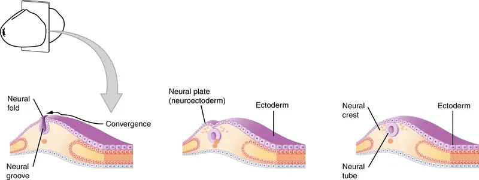
At this point, the early nervous system is a simple, hollow tube. It runs from the anterior end of the embryo to the posterior end. Beginning at 25 days, the anterior end develops into the brain, and the posterior portion becomes the spinal cord. This is the most basic arrangement of tissue in the nervous system, and it gives rise to the more complex structures by the fourth week of development.
Primary Vesicles¶
As the anterior end of the neural tube starts to develop into the brain, it undergoes a couple of enlargements; the result is the production of sac-like vesicles. Similar to a child’s balloon animal, the long, straight neural tube begins to take on a new shape. Three vesicles form at the first stage, which are called primary vesicles. These vesicles are given names that are based on Greek words, the main root word being enkephalon, which means “brain” (en- = “inside”; kephalon = “head”). The prefix to each generally corresponds to its position along the length of the developing nervous system.
The prosencephalon (pros- = “in front”) is the forward-most vesicle, and the term can be loosely translated to mean forebrain. The mesencephalon (mes- = “middle”) is the next vesicle, which can be called the midbrain. The third vesicle at this stage is the rhombencephalon. The first part of this word is also the root of the word rhombus, which is a geometrical figure with four sides of equal length (a square is a rhombus with 90° angles). Whereas prosencephalon and mesencephalon translate into the English words forebrain and midbrain, there is not a word for “four-sided-figure-brain.” However, the third vesicle can be called the hindbrain. One way of thinking about how the brain is arranged is to use these three regions—forebrain, midbrain, and hindbrain—which are based on the primary vesicle stage of development (Figure 13.3a).
Secondary Vesicles¶
The brain continues to develop, and the vesicles differentiate further (see Figure 13.3b). The three primary vesicles become five secondary vesicles. The prosencephalon enlarges into two new vesicles called the telencephalon and the diencephalon. The telecephalon will become the cerebrum. The diencephalon gives rise to several adult structures; two that will be important are the thalamus and the hypothalamus. In the embryonic diencephalon, a structure known as the eye cup develops, which will eventually become the retina, the nervous tissue of the eye called the retina. This is a rare example of nervous tissue developing as part of the CNS structures in the embryo, but becoming a peripheral structure in the fully formed nervous system.
The mesencephalon does not differentiate into any finer divisions. The midbrain is an established region of the brain at the primary vesicle stage of development and remains that way. The rest of the brain develops around it and constitutes a large percentage of the mass of the brain. Dividing the brain into forebrain, midbrain, and hindbrain is useful in considering its developmental pattern, but the midbrain is a small proportion of the entire brain, relatively speaking.
The rhombencephalon develops into the metencephalon and myelencephalon. The metencephalon corresponds to the adult structure known as the pons and also gives rise to the cerebellum. The cerebellum (from the Latin meaning “little brain”) accounts for about 10 percent of the mass of the brain and is an important structure in itself. The most significant connection between the cerebellum and the rest of the brain is at the pons, because the pons and cerebellum develop out of the same vesicle. The myelencephalon corresponds to the adult structure known as the medulla oblongata. The structures that come from the mesencephalon and rhombencephalon, except for the cerebellum, are collectively considered the brain stem, which specifically includes the midbrain, pons, and medulla.
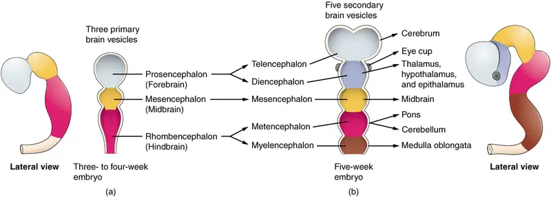
Interactive
Watch this animation to examine the development of the brain, starting with the neural tube. As the anterior end of the neural tube develops, it enlarges into the primary vesicles that establish the forebrain, midbrain, and hindbrain. Those structures continue to develop throughout the rest of embryonic development and into adolescence. They are the basis of the structure of the fully developed adult brain. How would you describe the difference in the relative sizes of the three regions of the brain when comparing the early (25th embryonic day) brain and the adult brain?
Spinal Cord Development¶
While the brain is developing from the anterior neural tube, the spinal cord is developing from the posterior neural tube. However, its structure does not differ from the basic layout of the neural tube. It is a long, straight cord with a small, hollow space down the center. The neural tube is defined in terms of its anterior versus posterior portions, but it also has a dorsal–ventral dimension. As the neural tube separates from the rest of the ectoderm, the side closest to the surface is dorsal, and the deeper side is ventral.
As the spinal cord develops, the cells making up the wall of the neural tube proliferate and differentiate into the neurons and glia of the spinal cord. The dorsal tissues will be associated with sensory functions, and the ventral tissues will be associated with motor functions.
Relating Embryonic Development to the Adult Brain¶
Embryonic development can help in understanding the structure of the adult brain because it establishes a framework on which more complex structures can be built. First, the neural tube establishes the anterior–posterior dimension of the nervous system, which is called the neuraxis. The embryonic nervous system in mammals can be said to have a standard arrangement. Humans (and other primates, to some degree) make this complicated by standing up and walking on two legs. The anterior–posterior dimension of the neuraxis overlays the superior–inferior dimension of the body. However, there is a major curve between the brain stem and forebrain, which is called the cephalic flexure. Because of this, the neuraxis starts in an inferior position—the end of the spinal cord—and ends in an anterior position, the front of the cerebrum. If this is confusing, just imagine a four-legged animal standing up on two legs. Without the flexure in the brain stem, and at the top of the neck, that animal would be looking straight up instead of straight in front (Figure 13.4).
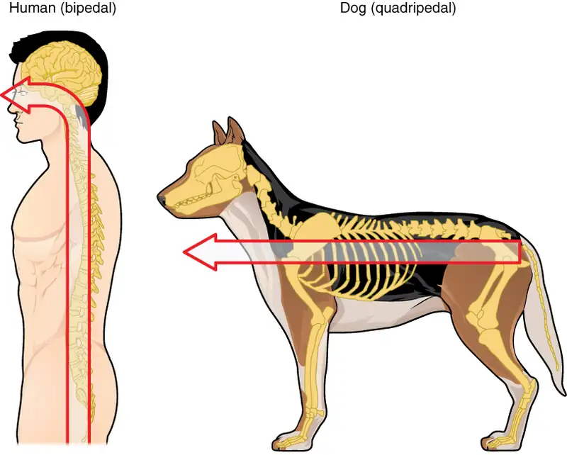
In summary, the primary vesicles help to establish the basic regions of the nervous system: forebrain, midbrain, and hindbrain. These divisions are useful in certain situations, but they are not equivalent regions. The midbrain is small compared with the hindbrain and particularly the forebrain. The secondary vesicles go on to establish the major regions of the adult nervous system that will be followed in this text. The telencephalon is the cerebrum, which is the major portion of the human brain. The diencephalon continues to be referred to by this Greek name, because there is no better term for it (dia- = “through”). The diencephalon is between the cerebrum and the rest of the nervous system and can be described as the region through which all projections have to pass between the cerebrum and everything else. The brain stem includes the midbrain, pons, and medulla, which correspond to the mesencephalon, metencephalon, and myelencephalon. The cerebellum, being a large portion of the brain, is considered a separate region. Table 13.1 connects the different stages of development to the adult structures of the CNS.
One other benefit of considering embryonic development is that certain connections are more obvious because of how these adult structures are related. The retina, which began as part of the diencephalon, is primarily connected to the diencephalon. The eyes are just inferior to the anterior-most part of the cerebrum, but the optic nerve extends back to the thalamus as the optic tract, with branches into a region of the hypothalamus. There is also a connection of the optic tract to the midbrain, but the mesencephalon is adjacent to the diencephalon, so that is not difficult to imagine. The cerebellum originates out of the metencephalon, and its largest white matter connection is to the pons, also from the metencephalon. There are connections between the cerebellum and both the medulla and midbrain, which are adjacent structures in the secondary vesicle stage of development. In the adult brain, the cerebellum seems close to the cerebrum, but there is no direct connection between them.
Another aspect of the adult CNS structures that relates to embryonic development is the ventricles—open spaces within the CNS where cerebrospinal fluid circulates. They are the remnant of the hollow center of the neural tube. The four ventricles and the tubular spaces associated with them can be linked back to the hollow center of the embryonic brain (see Table 13.1).
Table 13.1
| Stages of Embryonic Development | ||||
|---|---|---|---|---|
| Neural tube | Primary vesicle stage | Secondary vesicle stage | Adult structures | Ventricles |
| Anterior neural tube | Prosencephalon | Telencephalon | Cerebrum | Lateral ventricles |
| Anterior neural tube | Prosencephalon | Diencephalon | Diencephalon | Third ventricle |
| Anterior neural tube | Mesencephalon | Mesencephalon | Midbrain | Cerebral aqueduct |
| Anterior neural tube | Rhombencephalon | Metencephalon | Pons cerebellum | Fourth ventricle |
| Anterior neural tube | Rhombencephalon | Myelencephalon | Medulla | Fourth ventricle |
| Posterior neural tube | Spinal cord | Central canal | ||
Disorders of the Nervous System
Early formation of the nervous system depends on the formation of the neural tube. A groove forms along the dorsal surface of the embryo, which becomes deeper until its edges meet and close off to form the tube. If this fails to happen, especially in the posterior region where the spinal cord forms, a developmental defect called spina bifida occurs. The closing of the neural tube is important for more than just the proper formation of the nervous system. The surrounding tissues are dependent on the correct development of the tube. The connective tissues surrounding the CNS can be involved as well.
There are three classes of this disorder: occulta, meningocele, and myelomeningocele (Figure 13.5). The first type, spina bifida occulta, is the mildest because the vertebral bones do not fully surround the spinal cord, but the spinal cord itself is not affected. No functional differences may be noticed, which is what the word occulta means; it is hidden spina bifida. The other two types both involve the formation of a cyst—a fluid-filled sac of the connective tissues that cover the spinal cord called the meninges. “Meningocele” means that the meninges protrude through the spinal column but nerves may not be involved and few symptoms are present, though complications may arise later in life. “Myelomeningocele” means that the meninges protrude and spinal nerves are involved, and therefore severe neurological symptoms can be present.
Often surgery to close the opening or to remove the cyst is necessary. The earlier that surgery can be performed, the better the chances of controlling or limiting further damage or infection at the opening. For many children with meningocele, surgery will alleviate the pain, although they may experience some functional loss. Because the myelomeningocele form of spina bifida involves more extensive damage to the nervous tissue, neurological damage may persist, but symptoms can often be handled. Complications of the spinal cord may present later in life, but overall life expectancy is not reduced.
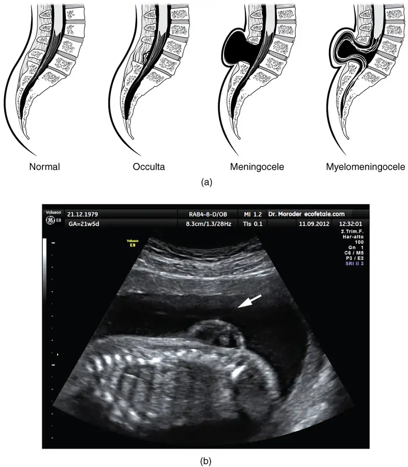
Interactive
Watch this video to learn more about overall brain development in children, including the role of white matter and its contribution to cognitive function. The video focuses on forming connections in the brain, especially from birth to 30 years of age and it shows several MRI studies.
13.2 The Central Nervous System¶
Learning Objectives
By the end of this section, you will be able to:
- Name the major regions of the adult brain
- Describe the connections between the cerebrum and brain stem through the diencephalon, and from those regions into the spinal cord
- Recognize the complex connections within the subcortical structures of the basal nuclei
- Explain the arrangement of gray and white matter in the spinal cord
The brain and the spinal cord are the central nervous system, and they represent the main organs of the nervous system. The spinal cord is a single structure, whereas the adult brain is described in terms of four major regions: the cerebrum, the diencephalon, the brain stem, and the cerebellum. A person’s conscious experiences are based on neural activity in the brain. The regulation of homeostasis is governed by a specialized region in the brain. The coordination of reflexes depends on the integration of sensory and motor pathways in the spinal cord.
The Cerebrum¶
The iconic gray mantle of the human brain, which appears to make up most of the mass of the brain, is the cerebrum (Figure 13.6). The wrinkled portion is the cerebral cortex, and the rest of the structure is beneath that outer covering. There is a large separation between the two sides of the cerebrum called the longitudinal fissure. It separates the cerebrum into two distinct halves, a right and left cerebral hemisphere. Deep within the cerebrum, the white matter of the corpus callosum provides the major pathway for communication between the two hemispheres of the cerebral cortex.
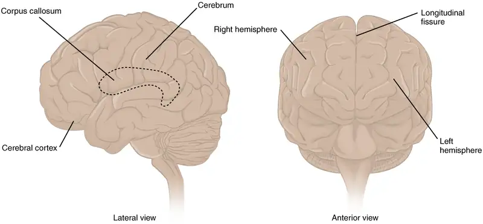
Many of the higher neurological functions, such as memory, emotion, and consciousness, are the result of cerebral function. The complexity of the cerebrum is different across vertebrate species. The cerebrum of the most primitive vertebrates is not much more than the connection for the sense of smell. In mammals, the cerebrum comprises the outer gray matter that is the cortex (from the Latin word meaning “bark of a tree”) and several deep nuclei that belong to three important functional groups. The basal nuclei are responsible for cognitive processing, the most important function being that associated with planning movements. The basal forebrain contains nuclei that are important in learning and memory. The limbic cortex is the region of the cerebral cortex that is part of the limbic system, a collection of structures involved in emotion, memory, and behavior.
Cerebral Cortex¶
The cerebrum is covered by a continuous layer of gray matter that wraps around either side of the forebrain—the cerebral cortex. This thin, extensive region of wrinkled gray matter is responsible for the higher functions of the nervous system. A gyrus (plural = gyri) is the ridge of one of those wrinkles, and a sulcus (plural = sulci) is the groove between two gyri. The pattern of these folds of tissue indicates specific regions of the cerebral cortex.
The head is limited by the size of the birth canal, and the brain must fit inside the cranial cavity of the skull. Extensive folding in the cerebral cortex enables more gray matter to fit into this limited space. If the gray matter of the cortex were peeled off of the cerebrum and laid out flat, its surface area would be roughly equal to one square meter.
The folding of the cortex maximizes the amount of gray matter in the cranial cavity. During embryonic development, as the telencephalon expands within the skull, the brain goes through a regular course of growth that results in everyone’s brain having a similar pattern of folds. The surface of the brain can be mapped on the basis of the locations of large gyri and sulci. Using these landmarks, the cortex can be separated into four major regions, or lobes (Figure 13.7). The lateral sulcus that separates the temporal lobe from the other regions is one such landmark. Superior to the lateral sulcus are the parietal lobe and frontal lobe, which are separated from each other by the central sulcus. The posterior region of the cortex is the occipital lobe, which has no obvious anatomical border between it and the parietal or temporal lobes on the lateral surface of the brain. From the medial surface, an obvious landmark separating the parietal and occipital lobes is called the parieto-occipital sulcus. The fact that there is no obvious anatomical border between these lobes is consistent with the functions of these regions being interrelated.
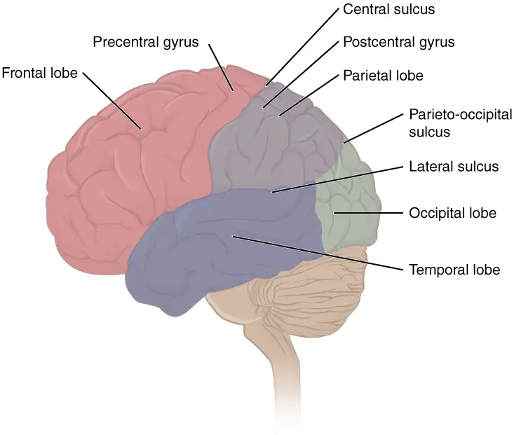
Different regions of the cerebral cortex can be associated with particular functions, a concept known as localization of function. In the early 1900s, a German neuroscientist named Korbinian Brodmann performed an extensive study of the microscopic anatomy—the cytoarchitecture—of the cerebral cortex and divided the cortex into 52 separate regions on the basis of the histology of the cortex. His work resulted in a system of classification known as Brodmann’s areas, which is still used today to describe the anatomical distinctions within the cortex (Figure 13.8). The results from Brodmann’s work on the anatomy align very well with the functional differences within the cortex. Areas 17 and 18 in the occipital lobe are responsible for primary visual perception. That visual information is complex, so it is processed in the temporal and parietal lobes as well.
The temporal lobe is associated with primary auditory sensation, known as Brodmann’s areas 41 and 42 in the superior temporal lobe. Because regions of the temporal lobe are part of the limbic system, memory is an important function associated with that lobe. Memory is essentially a sensory function; memories are recalled sensations such as the smell of Mom’s baking or the sound of a barking dog. Even memories of movement are really the memory of sensory feedback from those movements, such as stretching muscles or the movement of the skin around a joint. Structures in the temporal lobe are responsible for establishing long-term memory, but the ultimate location of those memories is usually in the region in which the sensory perception was processed.
The main sensation associated with the parietal lobe is somatosensation, meaning the general sensations associated with the body. Posterior to the central sulcus is the postcentral gyrus, the primary somatosensory cortex, which is identified as Brodmann’s areas 1, 2, and 3. All of the tactile senses are processed in this area, including touch, pressure, tickle, pain, itch, and vibration, as well as more general senses of the body such as proprioception and kinesthesia, which are the senses of body position and movement, respectively.
Anterior to the central sulcus is the frontal lobe, which is primarily associated with motor functions. The precentral gyrus is the primary motor cortex. Cells from this region of the cerebral cortex are the upper motor neurons that instruct cells in the spinal cord to move skeletal muscles. Anterior to this region are a few areas that are associated with planned movements. The premotor area is responsible for thinking of a movement to be made. The frontal eye fields are important in eliciting eye movements and in attending to visual stimuli. Broca’s area is responsible for the production of language, or controlling movements responsible for speech; in the vast majority of people, it is located only on the left side. Anterior to these regions is the prefrontal lobe, which serves cognitive functions that can be the basis of personality, short-term memory, and consciousness. The prefrontal lobotomy is an outdated mode of treatment for personality disorders (psychiatric conditions) that profoundly affected the personality of the patient.
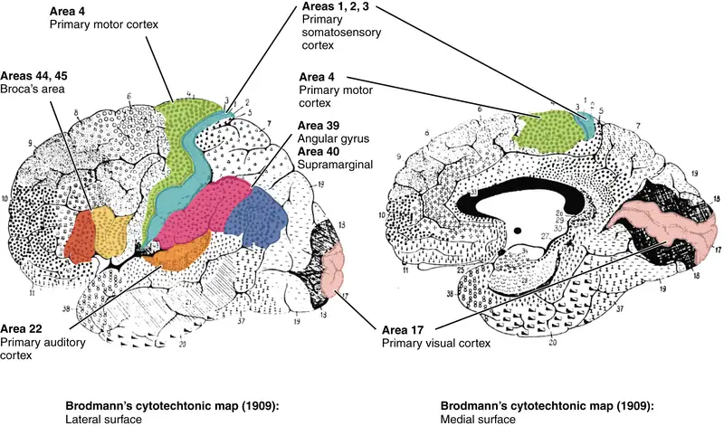
Subcortical structures¶
Beneath the cerebral cortex are sets of nuclei known as subcortical nuclei that augment cortical processes. The nuclei of the basal forebrain serve as the primary location for acetylcholine production, which modulates the overall activity of the cortex, possibly leading to greater attention to sensory stimuli. Alzheimer’s disease is associated with a loss of neurons in the basal forebrain. The hippocampus and amygdala are medial-lobe structures that, along with the adjacent cortex, are involved in long-term memory formation and emotional responses. The basal nuclei are a set of nuclei in the cerebrum responsible for comparing cortical processing with the general state of activity in the nervous system to influence the likelihood of movement taking place. For example, while a student is sitting in a classroom listening to a lecture, the basal nuclei will keep the urge to jump up and scream from actually happening. (The basal nuclei are also referred to as the basal ganglia, although that is potentially confusing because the term ganglia is typically used for peripheral structures.)
The major structures of the basal nuclei that control movement are the caudate, putamen, and globus pallidus, which are located deep in the cerebrum. The caudate is a long nucleus that follows the basic C-shape of the cerebrum from the frontal lobe, through the parietal and occipital lobes, into the temporal lobe. The putamen is mostly deep in the anterior regions of the frontal and parietal lobes. Together, the caudate and putamen are called the striatum. The globus pallidus is a layered nucleus that lies just medial to the putamen; they are called the lenticular nuclei because they look like curved pieces fitting together like lenses. The globus pallidus has two subdivisions, the external and internal segments, which are lateral and medial, respectively. These nuclei are depicted in a frontal section of the brain in Figure 13.9.
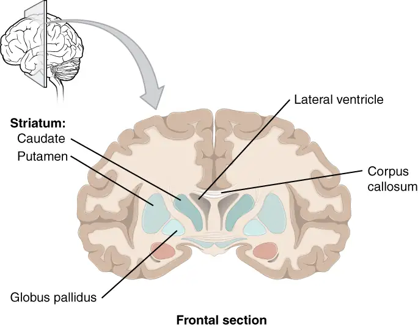
The basal nuclei in the cerebrum are connected with a few more nuclei in the brain stem that together act as a functional group that forms a motor pathway. Two streams of information processing take place in the basal nuclei. All input to the basal nuclei is from the cortex into the striatum (Figure 13.10). The direct pathway is the projection of axons from the striatum to the globus pallidus internal segment (GPi) and the substantia nigra pars reticulata (SNr). The GPi/SNr then projects to the thalamus, which projects back to the cortex. The indirect pathway is the projection of axons from the striatum to the globus pallidus external segment (GPe), then to the subthalamic nucleus (STN), and finally to GPi/SNr. The two streams both target the GPi/SNr, but one has a direct projection and the other goes through a few intervening nuclei. The direct pathway causes the disinhibition of the thalamus (inhibition of one cell on a target cell that then inhibits the first cell), whereas the indirect pathway causes, or reinforces, the normal inhibition of the thalamus. The thalamus then can either excite the cortex (as a result of the direct pathway) or fail to excite the cortex (as a result of the indirect pathway).
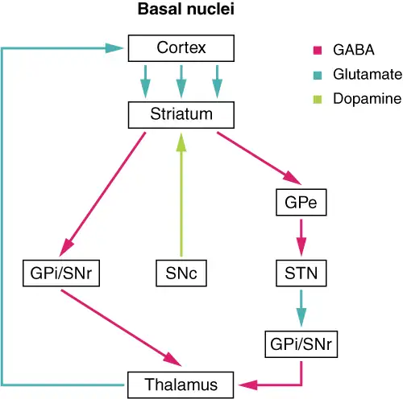
The switch between the two pathways is the substantia nigra pars compacta, which projects to the striatum and releases the neurotransmitter dopamine. Dopamine receptors are either excitatory (D1-type receptors) or inhibitory (D2-type receptors). The direct pathway is activated by dopamine, and the indirect pathway is inhibited by dopamine. When the substantia nigra pars compacta is firing, it signals to the basal nuclei that the body is in an active state, and movement will be more likely. When the substantia nigra pars compacta is silent, the body is in a passive state, and movement is inhibited. To illustrate this situation, while a student is sitting listening to a lecture, the substantia nigra pars compacta would be silent and the student less likely to get up and walk around. Likewise, while the professor is lecturing, and walking around at the front of the classroom, the professor’s substantia nigra pars compacta would be active, in keeping with their activity level.
Interactive
Watch this video to learn about the basal nuclei (also known as the basal ganglia), which have two pathways that process information within the cerebrum. As shown in this video, the direct pathway is the shorter pathway through the system that results in increased activity in the cerebral cortex and increased motor activity. The direct pathway is described as resulting in “disinhibition” of the thalamus. What does disinhibition mean? What are the two neurons doing individually to cause this?
Interactive
Watch this video to learn about the basal nuclei (also known as the basal ganglia), which have two pathways that process information within the cerebrum. As shown in this video, the indirect pathway is the longer pathway through the system that results in decreased activity in the cerebral cortex, and therefore less motor activity. The indirect pathway has an extra couple of connections in it, including disinhibition of the subthalamic nucleus. What is the end result on the thalamus, and therefore on movement initiated by the cerebral cortex?
Everyday Connection: The Myth of Left Brain/Right Brain
There is a persistent myth that people are “right-brained” or “left-brained,” which is an oversimplification of an important concept about the cerebral hemispheres. There is some lateralization of function, in which the left side of the brain is devoted to language function and the right side is devoted to spatial and nonverbal reasoning. Whereas these functions are predominantly associated with those sides of the brain, there is no monopoly by either side on these functions. Many pervasive functions, such as language, are distributed globally around the cerebrum.
Some of the support for this misconception has come from studies of split brains. A drastic way to deal with a rare and devastating neurological condition (intractable epilepsy) is to separate the two hemispheres of the brain. After sectioning the corpus callosum, a split-brained patient will have trouble producing verbal responses on the basis of sensory information processed on the right side of the cerebrum, leading to the idea that the left side is responsible for language function.
However, there are well-documented cases of language functions lost from damage to the right side of the brain. The deficits seen in damage to the left side of the brain are classified as aphasia, a loss of speech function; damage on the right side can affect the use of language. Right-side damage can result in a loss of ability to understand figurative aspects of speech, such as jokes, irony, or metaphors. Nonverbal aspects of speech can be affected by damage to the right side, such as facial expression or body language, and right-side damage can lead to a “flat affect” in speech, or a loss of emotional expression in speech—sounding like a robot when talking.
The Diencephalon¶
The diencephalon is the one region of the adult brain that retains its name from embryologic development. The etymology of the word diencephalon translates to “through brain.” It is the connection between the cerebrum and the rest of the nervous system, with one exception. The rest of the brain, the spinal cord, and the PNS all send information to the cerebrum through the diencephalon. Output from the cerebrum passes through the diencephalon. The single exception is the system associated with olfaction, or the sense of smell, which connects directly with the cerebrum. In the earliest vertebrate species, the cerebrum was not much more than olfactory bulbs that received peripheral information about the chemical environment (to call it smell in these organisms is imprecise because they lived in the ocean).
The diencephalon is deep beneath the cerebrum and constitutes the walls of the third ventricle. The diencephalon can be described as any region of the brain with “thalamus” in its name. The two major regions of the diencephalon are the thalamus itself and the hypothalamus (Figure 13.11). There are other structures, such as the epithalamus, which contains the pineal gland, or the subthalamus, which includes the subthalamic nucleus that is part of the basal nuclei.
Thalamus¶
The thalamus is a collection of nuclei that relay information between the cerebral cortex and the periphery, spinal cord, or brain stem. All sensory information, except for the sense of smell, passes through the thalamus before processing by the cortex. Axons from the peripheral sensory organs, or intermediate nuclei, synapse in the thalamus, and thalamic neurons project directly to the cerebrum. It is a requisite synapse in any sensory pathway, except for olfaction. The thalamus does not just pass the information on, it also processes that information. For example, the portion of the thalamus that receives visual information will influence what visual stimuli are important, or what receives attention.
The cerebrum also sends information down to the thalamus, which usually communicates motor commands. This involves interactions with the cerebellum and other nuclei in the brain stem. The cerebrum interacts with the basal nuclei, which involves connections with the thalamus. The primary output of the basal nuclei is to the thalamus, which relays that output to the cerebral cortex. The cortex also sends information to the thalamus that will then influence the effects of the basal nuclei.
Hypothalamus¶
Inferior and slightly anterior to the thalamus is the hypothalamus, the other major region of the diencephalon. The hypothalamus is a collection of nuclei that are largely involved in regulating homeostasis. The hypothalamus is the executive region in charge of the autonomic nervous system and the endocrine system through its regulation of the anterior pituitary gland. Other parts of the hypothalamus are involved in memory and emotion as part of the limbic system.
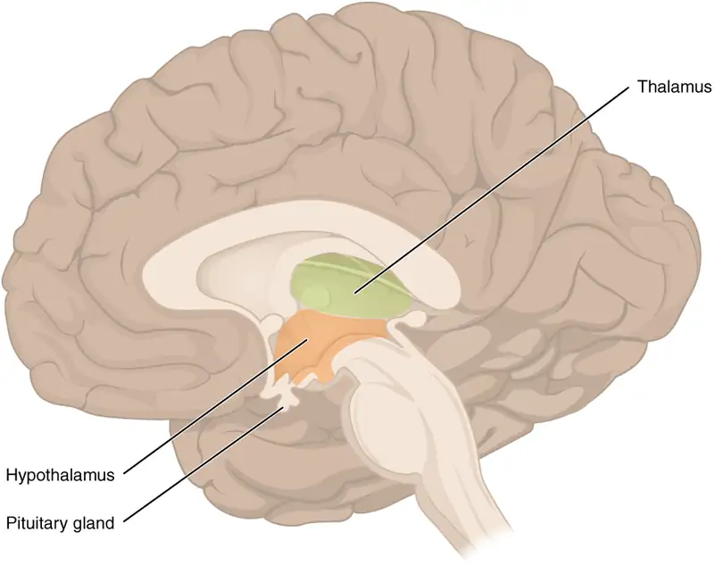
Brain Stem¶
The midbrain and hindbrain (composed of the pons and the medulla) are collectively referred to as the brain stem (Figure 13.12). The structure emerges from the ventral surface of the forebrain as a tapering cone that connects the brain to the spinal cord. Attached to the brain stem, but considered a separate region of the adult brain, is the cerebellum. The midbrain coordinates sensory representations of the visual, auditory, and somatosensory perceptual spaces. The pons is the main connection with the cerebellum. The pons and the medulla regulate several crucial functions, including the cardiovascular and respiratory systems and rates.
The cranial nerves connect through the brain stem and provide the brain with the sensory input and motor output associated with the head and neck, including most of the special senses. The major ascending and descending pathways between the spinal cord and brain, specifically the cerebrum, pass through the brain stem.
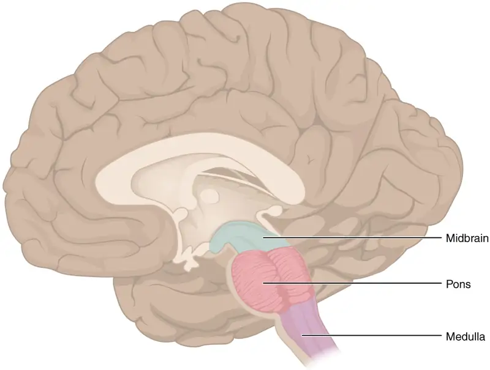
Midbrain¶
One of the original regions of the embryonic brain, the midbrain is a small region between the thalamus and pons. It is separated into the tectum and tegmentum, from the Latin words for roof and floor, respectively. The cerebral aqueduct passes through the center of the midbrain, such that these regions are the roof and floor of that canal.
The tectum is composed of four bumps known as the colliculi (singular = colliculus), which means “little hill” in Latin. The inferior colliculus is the inferior pair of these enlargements and is part of the auditory brain stem pathway. Neurons of the inferior colliculus project to the thalamus, which then sends auditory information to the cerebrum for the conscious perception of sound. The superior colliculus is the superior pair and combines sensory information about visual space, auditory space, and somatosensory space. Activity in the superior colliculus is related to orienting the eyes to a sound or touch stimulus. If you are walking along the sidewalk on campus and you hear chirping, the superior colliculus coordinates that information with your awareness of the visual location of the tree right above you. That is the correlation of auditory and visual maps. If you suddenly feel something wet fall on your head, your superior colliculus integrates that with the auditory and visual maps and you know that the chirping bird just relieved itself on you. You want to look up to see the culprit, but do not.
The tegmentum is continuous with the gray matter of the rest of the brain stem. Throughout the midbrain, pons, and medulla, the tegmentum contains the nuclei that receive and send information through the cranial nerves, as well as regions that regulate important functions such as those of the cardiovascular and respiratory systems.
Pons¶
The word pons comes from the Latin word for bridge. It is visible on the anterior surface of the brain stem as the thick bundle of white matter attached to the cerebellum. The pons is the main connection between the cerebellum and the brain stem. The bridge-like white matter is only the anterior surface of the pons; the gray matter beneath that is a continuation of the tegmentum from the midbrain. Gray matter in the tegmentum region of the pons contains neurons receiving descending input from the forebrain that is sent to the cerebellum.
Medulla¶
The medulla is the region known as the myelencephalon in the embryonic brain. The initial portion of the name, “myel,” refers to the significant white matter found in this region—especially on its exterior, which is continuous with the white matter of the spinal cord. The tegmentum of the midbrain and pons continues into the medulla because this gray matter is responsible for processing cranial nerve information. A diffuse region of gray matter throughout the brain stem, known as the reticular formation, is related to sleep and wakefulness, such as general brain activity and attention.
The Cerebellum¶
The cerebellum, as the name suggests, is the “little brain.” It is covered in gyri and sulci like the cerebrum, and looks like a miniature version of that part of the brain (Figure 13.13). The cerebellum is largely responsible for comparing information from the cerebrum with sensory feedback from the periphery through the spinal cord. It accounts for approximately 10 percent of the mass of the brain.
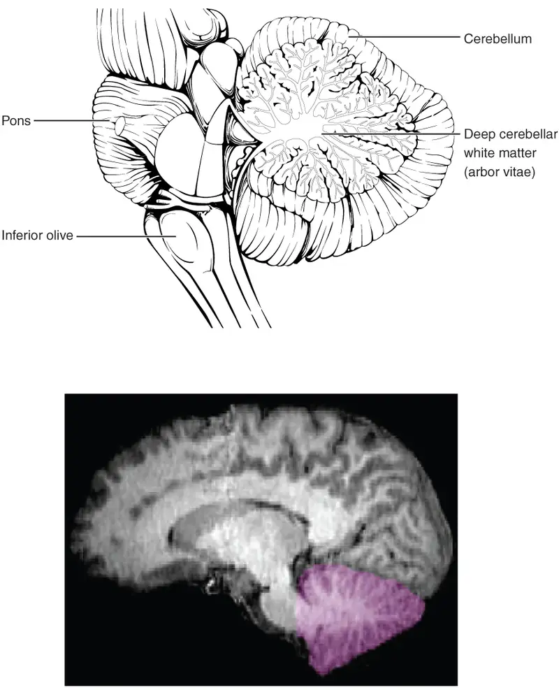
Descending fibers from the cerebrum have branches that connect to neurons in the pons. Those neurons project into the cerebellum, providing a copy of motor commands sent to the spinal cord. Sensory information from the periphery, which enters through spinal or cranial nerves, is copied to a nucleus in the medulla known as the inferior olive. Fibers from this nucleus enter the cerebellum and are compared with the descending commands from the cerebrum. If the primary motor cortex of the frontal lobe sends a command down to the spinal cord to initiate walking, a copy of that instruction is sent to the cerebellum. Sensory feedback from the muscles and joints, proprioceptive information about the movements of walking, and sensations of balance are sent to the cerebellum through the inferior olive and the cerebellum compares them. If walking is not coordinated, perhaps because the ground is uneven or a strong wind is blowing, then the cerebellum sends out a corrective command to compensate for the difference between the original cortical command and the sensory feedback. The output of the cerebellum is into the midbrain, which then sends a descending input to the spinal cord to correct the messages going to skeletal muscles.
The Spinal Cord¶
The description of the CNS is concentrated on the structures of the brain, but the spinal cord is another major organ of the system. Whereas the brain develops out of expansions of the neural tube into primary and then secondary vesicles, the spinal cord maintains the tube structure and is only specialized into certain regions. As the spinal cord continues to develop in the newborn, anatomical features mark its surface. The anterior midline is marked by the anterior median fissure, and the posterior midline is marked by the posterior median sulcus. Axons enter the posterior side through the dorsal (posterior) nerve root, which marks the posterolateral sulcus on either side. The axons emerging from the anterior side do so through the ventral (anterior) nerve root. Note that it is common to see the terms dorsal (dorsal = “back”) and ventral (ventral = “belly”) used interchangeably with posterior and anterior, particularly in reference to nerves and the structures of the spinal cord. You should learn to be comfortable with both.
On the whole, the posterior regions are responsible for sensory functions and the anterior regions are associated with motor functions. This comes from the initial development of the spinal cord, which is divided into the basal plate and the alar plate. The basal plate is closest to the ventral midline of the neural tube, which will become the anterior face of the spinal cord and gives rise to motor neurons. The alar plate is on the dorsal side of the neural tube and gives rise to neurons that will receive sensory input from the periphery.
The length of the spinal cord is divided into regions that correspond to the regions of the vertebral column. The name of a spinal cord region corresponds to the level at which spinal nerves pass through the intervertebral foramina. Immediately adjacent to the brain stem is the cervical region, followed by the thoracic, then the lumbar, and finally the sacral region. The spinal cord is not the full length of the vertebral column because the spinal cord does not grow significantly longer after the first or second year, but the skeleton continues to grow. The nerves that emerge from the spinal cord pass through the intervertebral foramina at the respective levels. As the vertebral column grows, these nerves grow with it and result in a long bundle of nerves that resembles a horse’s tail and is named the cauda equina. The sacral spinal cord is at the level of the upper lumbar vertebral bones. The spinal nerves extend from their various levels to the proper level of the vertebral column.
Gray Horns¶
In cross-section, the gray matter of the spinal cord has the appearance of an ink-blot test, with the spread of the gray matter on one side replicated on the other—a shape reminiscent of a bulbous capital “H.” As shown in Figure 13.14, the gray matter is subdivided into regions that are referred to as horns. The posterior horn is responsible for sensory processing. The anterior horn sends out motor signals to the skeletal muscles. The lateral horn, which is only found in the thoracic, upper lumbar, and sacral regions, contains cell bodies of motor neurons of the autonomic nervous system.
Some of the largest neurons of the spinal cord are the multipolar motor neurons in the anterior horn. The fibers that cause contraction of skeletal muscles are the axons of these neurons. The motor neuron that causes contraction of the big toe, for example, is located in the sacral spinal cord. The axon that has to reach all the way to the belly of that muscle may be a meter in length. The neuronal cell body that maintains that long fiber must be quite large, possibly several hundred micrometers in diameter, making it one of the largest cells in the body.
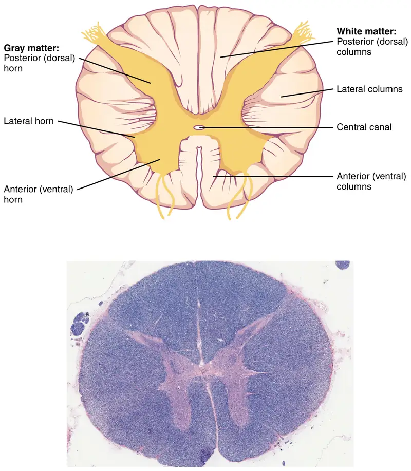
White Columns¶
Just as the gray matter is separated into horns, the white matter of the spinal cord is separated into columns. Ascending tracts of nervous system fibers in these columns carry sensory information up to the brain, whereas descending tracts carry motor commands from the brain. Looking at the spinal cord longitudinally, the columns extend along its length as continuous bands of white matter. Between the two posterior horns of gray matter are the posterior columns. Between the two anterior horns, and bounded by the axons of motor neurons emerging from that gray matter area, are the anterior columns. The white matter on either side of the spinal cord, between the posterior horn and the axons of the anterior horn neurons, are the lateral columns. The posterior columns are composed of axons of ascending tracts. The anterior and lateral columns are composed of many different groups of axons of both ascending and descending tracts—the latter carrying motor commands down from the brain to the spinal cord to control output to the periphery.
Interactive
Watch this video to learn about the gray matter of the spinal cord that receives input from fibers of the dorsal (posterior) root and sends information out through the fibers of the ventral (anterior) root. As discussed in this video, these connections represent the interactions of the CNS with peripheral structures for both sensory and motor functions. The cervical and lumbar spinal cords have enlargements as a result of larger populations of neurons. What are these enlargements responsible for?
Disorders of the Basal Nuclei
Parkinson’s disease is a disorder of the basal nuclei, specifically of the substantia nigra, that demonstrates the effects of the direct and indirect pathways. Parkinson’s disease is the result of neurons in the substantia nigra pars compacta dying. These neurons release dopamine into the striatum. Without that modulatory influence, the basal nuclei are stuck in the indirect pathway, without the direct pathway being activated. The direct pathway is responsible for increasing cortical movement commands. The increased activity of the indirect pathway results in the hypokinetic disorder of Parkinson’s disease.
Parkinson’s disease is neurodegenerative, meaning that neurons die that cannot be replaced, so there is no cure for the disorder. Treatments for Parkinson’s disease are aimed at increasing dopamine levels in the striatum. Currently, the most common way of doing that is by providing the amino acid L-DOPA, which is a precursor to the neurotransmitter dopamine and can cross the blood-brain barrier. With levels of the precursor elevated, the remaining cells of the substantia nigra pars compacta can make more neurotransmitter and have a greater effect. Unfortunately, the patient will become less responsive to L-DOPA treatment as time progresses, and it can cause increased dopamine levels elsewhere in the brain, which are associated with psychosis or schizophrenia.
Interactive
Visit this site for a thorough explanation of Parkinson’s disease.
Interactive
Compared with the nearest evolutionary relative, the chimpanzee, the human has a brain that is huge. At a point in the past, a common ancestor gave rise to the two species of humans and chimpanzees. That evolutionary history is long and is still an area of intense study. But something happened to increase the size of the human brain relative to the chimpanzee. Read this article in which the author explores the current understanding of why this happened.
According to one hypothesis about the expansion of brain size, what tissue might have been sacrificed so energy was available to grow our larger brain? Based on what you know about that tissue and nervous tissue, why would there be a trade-off between them in terms of energy use?
13.3 Circulation and the Central Nervous System¶
Learning Objectives
By the end of this section, you will be able to:
- Describe the vessels that supply the CNS with blood
- Name the components of the ventricular system and the regions of the brain in which each is located
- Explain the production of cerebrospinal fluid and its flow through the ventricles
- Explain how a disruption in circulation would result in a stroke
The CNS is crucial to the operation of the body, and any compromise in the brain and spinal cord can lead to severe difficulties. The CNS has a privileged blood supply, as suggested by the blood-brain barrier. The function of the tissue in the CNS is crucial to the survival of the organism, so the contents of the blood cannot simply pass into the central nervous tissue. To protect this region from the toxins and pathogens that may be traveling through the blood stream, there is strict control over what can move out of the general systems and into the brain and spinal cord. Because of this privilege, the CNS needs specialized structures for the maintenance of circulation. This begins with a unique arrangement of blood vessels carrying fresh blood into the CNS. Beyond the supply of blood, the CNS filters that blood into cerebrospinal fluid (CSF), which is then circulated through the cavities of the brain and spinal cord called ventricles.
Blood Supply to the Brain¶
A lack of oxygen to the CNS can be devastating, and the cardiovascular system has specific regulatory reflexes to ensure that the blood supply is not interrupted. There are multiple routes for blood to get into the CNS, with specializations to protect that blood supply and to maximize the ability of the brain to get an uninterrupted perfusion.
Arterial Supply¶
The major artery carrying recently oxygenated blood away from the heart is the aorta. The very first branches off the aorta supply the heart with nutrients and oxygen. The next branches give rise to the common carotid arteries, which further branch into the internal carotid arteries. The external carotid arteries supply blood to the tissues on the surface of the cranium. The bases of the common carotids contain stretch receptors that immediately respond to the drop in blood pressure upon standing. The orthostatic reflex is a reaction to this change in body position, so that blood pressure is maintained against the increasing effect of gravity (orthostatic means “standing up”). Heart rate increases—a reflex of the sympathetic division of the autonomic nervous system—and this raises blood pressure.
The internal carotid artery enters the cranium through the carotid canal in the temporal bone. A second set of vessels that supply the CNS are the vertebral arteries, which are protected as they pass through the neck region by the transverse foramina of the cervical vertebrae. The vertebral arteries enter the cranium through the foramen magnum of the occipital bone. Branches off the left and right vertebral arteries merge into the anterior spinal artery supplying the anterior aspect of the spinal cord, found along the anterior median fissure. The two vertebral arteries then merge into the basilar artery, which gives rise to branches to the brain stem and cerebellum. The left and right internal carotid arteries and branches of the basilar artery all become the circle of Willis, a confluence of arteries that can maintain perfusion of the brain even if narrowing or a blockage limits flow through one part (Figure 13.15).
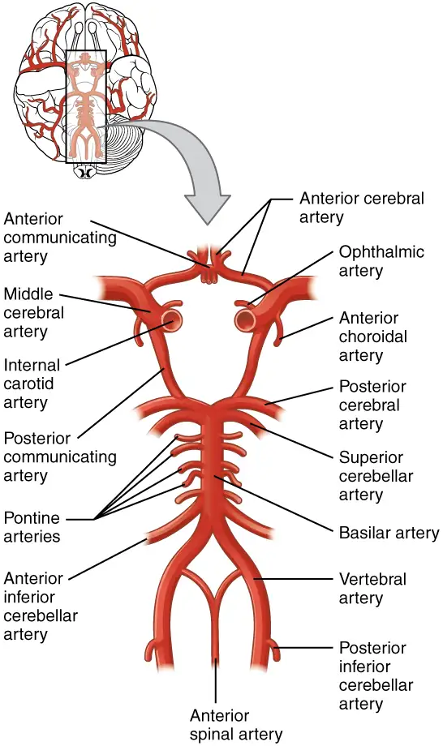
Interactive
Watch this animation to see how blood flows to the brain and passes through the circle of Willis before being distributed through the cerebrum. The circle of Willis is a specialized arrangement of arteries that ensure constant perfusion of the cerebrum even in the event of a blockage of one of the arteries in the circle. The animation shows the normal direction of flow through the circle of Willis to the middle cerebral artery. Where would the blood come from if there were a blockage just posterior to the middle cerebral artery on the left?
Venous Return¶
After passing through the CNS, blood returns to the circulation through a series of dural sinuses and veins (Figure 13.16). The superior sagittal sinus runs in the groove of the longitudinal fissure, where it absorbs CSF from the meninges. The superior sagittal sinus drains to the confluence of sinuses, along with the occipital sinuses and straight sinus, to then drain into the transverse sinuses. The transverse sinuses connect to the sigmoid sinuses, which then connect to the jugular veins. From there, the blood continues toward the heart to be pumped to the lungs for reoxygenation.
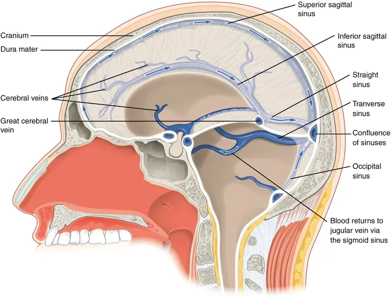
Protective Coverings of the Brain and Spinal Cord¶
The outer surface of the CNS is covered by a series of membranes composed of connective tissue called the meninges, which protect the brain. The dura mater is a thick fibrous layer and a strong protective sheath over the entire brain and spinal cord. It is anchored to the inner surface of the cranium and vertebral cavity. The arachnoid mater is a membrane of thin fibrous tissue that forms a loose sac around the CNS. Beneath the arachnoid is a thin, filamentous mesh called the arachnoid trabeculae, which looks like a spider web, giving this layer its name. Directly adjacent to the surface of the CNS is the pia mater, a thin fibrous membrane that follows the convolutions of gyri and sulci in the cerebral cortex and fits into other grooves and indentations (Figure 13.17).
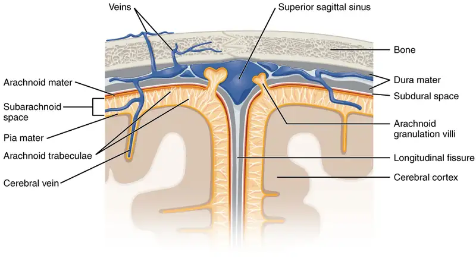
Dura Mater¶
Like a thick cap covering the brain, the dura mater is a tough outer covering. The name comes from the Latin for “tough mother” to represent its physically protective role. It encloses the entire CNS and the major blood vessels that enter the cranium and vertebral cavity. It is directly attached to the inner surface of the bones of the cranium and to the very end of the vertebral cavity.
There are infoldings of the dura that fit into large crevasses of the brain. Two infoldings go through the midline separations of the cerebrum and cerebellum; one forms a shelf-like tent between the occipital lobes of the cerebrum and the cerebellum, and the other surrounds the pituitary gland. The dura also surrounds and supports the venous sinuses.
Arachnoid Mater¶
The middle layer of the meninges is the arachnoid, named for the spider-web–like trabeculae between it and the pia mater. The arachnoid defines a sac-like enclosure around the CNS. The trabeculae are found in the subarachnoid space, which is filled with circulating CSF. The arachnoid emerges into the dural sinuses as the arachnoid granulations, where the CSF is filtered back into the blood for drainage from the nervous system.
The subarachnoid space is filled with circulating CSF, which also provides a liquid cushion to the brain and spinal cord. Similar to clinical blood work, a sample of CSF can be withdrawn to find chemical evidence of neuropathology or metabolic traces of the biochemical functions of nervous tissue.
Pia Mater¶
The outer surface of the CNS is covered in the thin fibrous membrane of the pia mater. It is thought to have a continuous layer of cells providing a fluid-impermeable membrane. The name pia mater comes from the Latin for “tender mother,” suggesting the thin membrane is a gentle covering for the brain. The pia extends into every convolution of the CNS, lining the inside of the sulci in the cerebral and cerebellar cortices. At the end of the spinal cord, a thin filament extends from the inferior end of CNS at the upper lumbar region of the vertebral column to the sacral end of the vertebral column. Because the spinal cord does not extend through the lower lumbar region of the vertebral column, a needle can be inserted through the dura and arachnoid layers to withdraw CSF. This procedure is called a lumbar puncture and avoids the risk of damaging the central tissue of the spinal cord. Blood vessels that are nourishing the central nervous tissue are between the pia mater and the nervous tissue.
Disorders of the Meninges
Meningitis is an inflammation of the meninges, the three layers of fibrous membrane that surround the CNS. Meningitis can be caused by infection by bacteria or viruses. The particular pathogens are not special to meningitis; it is just an inflammation of that specific set of tissues from what might be a broader infection. Bacterial meningitis can be caused by Streptococcus, Staphylococcus, or the tuberculosis pathogen, among many others. Viral meningitis is usually the result of common enteroviruses (such as those that cause intestinal disorders), but may be the result of the herpes virus or West Nile virus. Bacterial meningitis tends to be more severe.
The symptoms associated with meningitis can be fever, chills, nausea, vomiting, light sensitivity, soreness of the neck, or severe headache. More important are the neurological symptoms, such as changes in mental state (confusion, memory deficits, and other dementia-type symptoms). A serious risk of meningitis can be damage to peripheral structures because of the nerves that pass through the meninges. Hearing loss is a common result of meningitis.
The primary test for meningitis is a lumbar puncture. A needle inserted into the lumbar region of the spinal column through the dura mater and arachnoid membrane into the subarachnoid space can be used to withdraw the fluid for chemical testing. Fatality occurs in 5 to 40 percent of children and 20 to 50 percent of adults with bacterial meningitis. Treatment of bacterial meningitis is through antibiotics, but viral meningitis cannot be treated with antibiotics because viruses do not respond to that type of drug. Fortunately, the viral forms are milder.
Interactive
Watch this video that describes the procedure known as the lumbar puncture, a medical procedure used to sample the CSF. Because of the anatomy of the CNS, it is a relative safe location to insert a needle. Why is the lumbar puncture performed in the lower lumbar area of the vertebral column?
The Ventricular System¶
Cerebrospinal fluid (CSF) circulates throughout and around the CNS. In other tissues, water and small molecules are filtered through capillaries as the major contributor to the interstitial fluid. In the brain, CSF is produced in special structures to perfuse through the nervous tissue of the CNS and is continuous with the interstitial fluid. Specifically, CSF circulates to remove metabolic wastes from the interstitial fluids of nervous tissues and return them to the blood stream. The ventricles are the open spaces within the brain where CSF circulates. In some of these spaces, CSF is produced by filtering of the blood that is performed by a specialized membrane known as a choroid plexus. The CSF circulates through all of the ventricles to eventually emerge into the subarachnoid space where it will be reabsorbed into the blood.
The Ventricles¶
There are four ventricles within the brain, all of which developed from the original hollow space within the neural tube, the central canal. The first two are named the lateral ventricles and are deep within the cerebrum. These ventricles are connected to the third ventricle by two openings called the interventricular foramina. The third ventricle is the space between the left and right sides of the diencephalon, which opens into the cerebral aqueduct that passes through the midbrain. The aqueduct opens into the fourth ventricle, which is the space between the cerebellum and the pons and upper medulla (Figure 13.18).
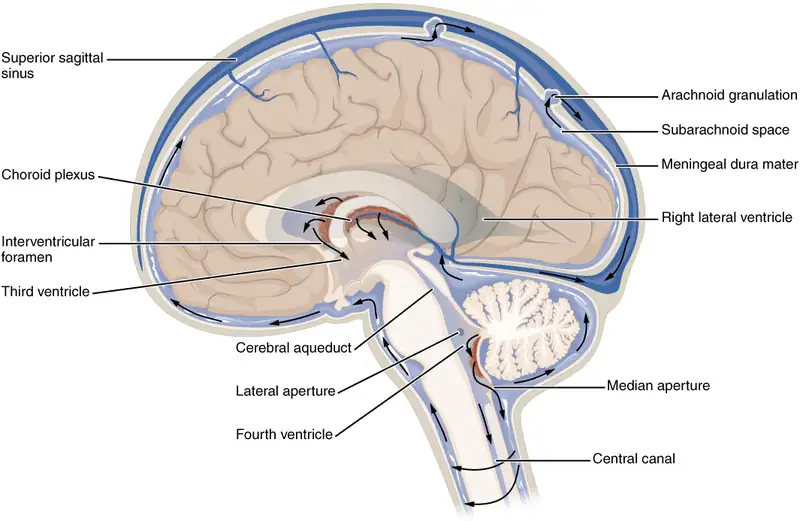
As the telencephalon enlarges and grows into the cranial cavity, it is limited by the space within the skull. The telencephalon is the most anterior region of what was the neural tube, but cannot grow past the limit of the frontal bone of the skull. Because the cerebrum fits into this space, it takes on a C-shaped formation, through the frontal, parietal, occipital, and finally temporal regions. The space within the telencephalon is stretched into this same C-shape. The two ventricles are in the left and right sides, and were at one time referred to as the first and second ventricles. The interventricular foramina connect the frontal region of the lateral ventricles with the third ventricle.
The third ventricle is the space bounded by the medial walls of the hypothalamus and thalamus. The two thalami touch in the center in most brains as the massa intermedia, which is surrounded by the third ventricle. The cerebral aqueduct opens just inferior to the epithalamus and passes through the midbrain. The tectum and tegmentum of the midbrain are the roof and floor of the cerebral aqueduct, respectively. The aqueduct opens up into the fourth ventricle. The floor of the fourth ventricle is the dorsal surface of the pons and upper medulla (that gray matter making a continuation of the tegmentum of the midbrain). The fourth ventricle then narrows into the central canal of the spinal cord.
The ventricular system opens up to the subarachnoid space from the fourth ventricle. The single median aperture and the pair of lateral apertures connect to the subarachnoid space so that CSF can flow through the ventricles and around the outside of the CNS. Cerebrospinal fluid is produced within the ventricles by a type of specialized membrane called a choroid plexus. Ependymal cells (one of the types of glial cells described in the introduction to the nervous system) surround blood capillaries and filter the blood to make CSF. The fluid is a clear solution with a limited amount of the constituents of blood. It is essentially water, small molecules, and electrolytes. Oxygen and carbon dioxide are dissolved into the CSF, as they are in blood, and can diffuse between the fluid and the nervous tissue.
Cerebrospinal Fluid Circulation¶
The choroid plexuses are found in all four ventricles. Observed in dissection, they appear as soft, fuzzy structures that may still be pink, depending on how well the circulatory system is cleared in preparation of the tissue. The CSF is produced from components extracted from the blood, so its flow out of the ventricles is tied to the pulse of cardiovascular circulation.
From the lateral ventricles, the CSF flows into the third ventricle, where more CSF is produced, and then through the cerebral aqueduct into the fourth ventricle where even more CSF is produced. A very small amount of CSF is filtered at any one of the plexuses, for a total of about 500 milliliters daily, but it is continuously made and pulses through the ventricular system, keeping the fluid moving. From the fourth ventricle, CSF can continue down the central canal of the spinal cord, but this is essentially a cul-de-sac, so more of the fluid leaves the ventricular system and moves into the subarachnoid space through the median and lateral apertures.
Within the subarachnoid space, the CSF flows around all of the CNS, providing two important functions. As with elsewhere in its circulation, the CSF picks up metabolic wastes from the nervous tissue and moves it out of the CNS. It also acts as a liquid cushion for the brain and spinal cord. By surrounding the entire system in the subarachnoid space, it provides a thin buffer around the organs within the strong, protective dura mater. The arachnoid granulations are outpocketings of the arachnoid membrane into the dural sinuses so that CSF can be reabsorbed into the blood, along with the metabolic wastes. From the dural sinuses, blood drains out of the head and neck through the jugular veins, along with the rest of the circulation for blood, to be reoxygenated by the lungs and wastes to be filtered out by the kidneys (Table 13.2).
Interactive
Watch this animation that shows the flow of CSF through the brain and spinal cord, and how it originates from the ventricles and then spreads into the space within the meninges, where the fluids then move into the venous sinuses to return to the cardiovascular circulation. What are the structures that produce CSF and where are they found? How are the structures indicated in this animation?
Table 13.2
| Components of CSF Circulation | ||||||
|---|---|---|---|---|---|---|
| Lateral ventricles | Third ventricle | Cerebral aqueduct | Fourth ventricle | Central canal | Subarachnoid space | |
| Location in CNS | Cerebrum | Diencephalon | Midbrain | Between pons/upper medulla and cerebellum | Spinal cord | External to entire CNS |
| Blood vessel structure | Choroid plexus | Choroid plexus | None | Choroid plexus | None | Arachnoid granulations |
Disorders of the Central Nervous System
The supply of blood to the brain is crucial to its ability to perform many functions. Without a steady supply of oxygen, and to a lesser extent glucose, the nervous tissue in the brain cannot keep up its extensive electrical activity. These nutrients get into the brain through the blood, and if blood flow is interrupted, neurological function is compromised.
The common name for a disruption of blood supply to the brain is a stroke. It is caused by a blockage to an artery in the brain. The blockage is from some type of embolus: a blood clot, a fat embolus, or an air bubble. When the blood cannot travel through the artery, the surrounding tissue that is deprived starves and dies. Strokes will often result in the loss of very specific functions. A stroke in the lateral medulla, for example, can cause a loss in the ability to swallow. Sometimes, seemingly unrelated functions will be lost because they are dependent on structures in the same region. Along with the swallowing in the previous example, a stroke in that region could affect sensory functions from the face or extremities because important white matter pathways also pass through the lateral medulla. Loss of blood flow to specific regions of the cortex can lead to the loss of specific higher functions, from the ability to recognize faces to the ability to move a particular region of the body. Severe or limited memory loss can be the result of a temporal lobe stroke.
Related to strokes are transient ischemic attacks (TIAs), which can also be called “mini-strokes.” These are events in which a physical blockage may be temporary, cutting off the blood supply and oxygen to a region, but not to the extent that it causes cell death in that region. While the neurons in that area are recovering from the event, neurological function may be lost. Function can return if the area is able to recover from the event.
Recovery from a stroke (or TIA) is strongly dependent on the speed of treatment. Often, the person who is present and notices something is wrong must then make a decision. The mnemonic FAST helps people remember what to look for when someone is dealing with sudden losses of neurological function. If someone complains of feeling “funny,” check these things quickly: Look at the person’s face. Do they have problems moving Face muscles and making regular facial expressions? Ask the person to raise their Arms above the head. Can the person lift one arm but not the other? Has the person’s Speech changed? Are they slurring words or having trouble saying things? If any of these things have happened, then it is Time to call for help.
Sometimes, treatment with blood-thinning drugs can alleviate the problem, and recovery is possible. If the tissue is damaged, the amazing thing about the nervous system is that it is adaptable. With physical, occupational, and speech therapy, victims of strokes can recover, or more accurately relearn, functions.
13.4 The Peripheral Nervous System¶
Learning Objectives
By the end of this section, you will be able to:
- Describe the structures found in the PNS
- Distinguish between somatic and autonomic structures, including the special peripheral structures of the enteric nervous system
- Name the twelve cranial nerves and explain the functions associated with each
- Describe the sensory and motor components of spinal nerves and the plexuses that they pass through
The PNS is not as contained as the CNS because it is defined as everything that is not the CNS. Some peripheral structures are incorporated into the other organs of the body. In describing the anatomy of the PNS, it is necessary to describe the common structures, the nerves and the ganglia, as they are found in various parts of the body. Many of the neural structures that are incorporated into other organs are features of the digestive system; these structures are known as the enteric nervous system and are a special subset of the PNS.
Ganglia¶
A ganglion is a group of neuron cell bodies in the periphery. Ganglia can be categorized, for the most part, as either sensory ganglia or autonomic ganglia, referring to their primary functions. The most common type of sensory ganglion is a dorsal (posterior) root ganglion. These ganglia are the cell bodies of neurons with axons that are sensory endings in the periphery, such as in the skin, and that extend into the CNS through the dorsal nerve root. The ganglion is an enlargement of the nerve root. Under microscopic inspection, it can be seen to include the cell bodies of the neurons, as well as bundles of fibers that are the posterior nerve root (Figure 13.19). The cells of the dorsal root ganglion are unipolar cells, classifying them by shape. Also, the small round nuclei of satellite cells can be seen surrounding—as if they were orbiting—the neuron cell bodies.
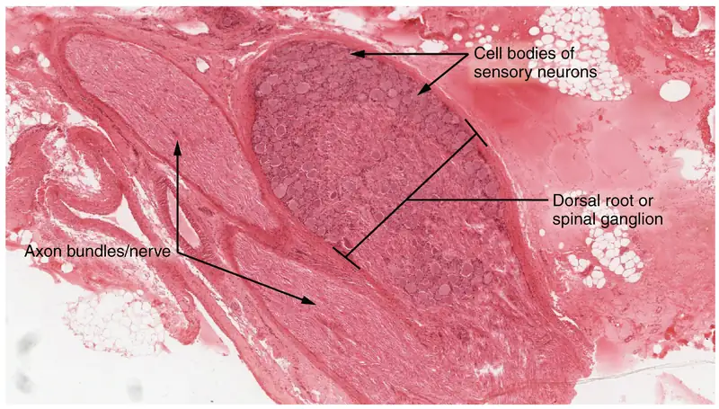
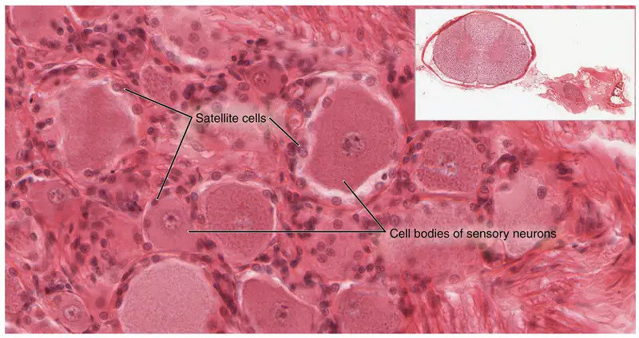
Interactive
View the University of Michigan WebScope to explore the tissue sample in greater detail. If you zoom in on the dorsal root ganglion, you can see smaller satellite glial cells surrounding the large cell bodies of the sensory neurons. From what structure do satellite cells derive during embryologic development?
Another type of sensory ganglion is a cranial nerve ganglion. This is analogous to the dorsal root ganglion, except that it is associated with a cranial nerve instead of a spinal nerve. The roots of cranial nerves are within the cranium, whereas the ganglia are outside the skull. For example, the trigeminal ganglion is superficial to the temporal bone whereas its associated nerve is attached to the mid-pons region of the brain stem. The neurons of cranial nerve ganglia are also unipolar in shape with associated satellite cells.
The other major category of ganglia are those of the autonomic nervous system, which is divided into the sympathetic and parasympathetic nervous systems. The sympathetic chain ganglia constitute a row of ganglia along the vertebral column that receive central input from the lateral horn of the thoracic and upper lumbar spinal cord. Superior to the chain ganglia are three paravertebral ganglia in the cervical region. Three other autonomic ganglia that are related to the sympathetic chain are the prevertebral ganglia, which are located outside of the chain but have similar functions. They are referred to as prevertebral because they are anterior to the vertebral column. The neurons of these autonomic ganglia are multipolar in shape, with dendrites radiating out around the cell body where synapses from the spinal cord neurons are made. The neurons of the chain, paravertebral, and prevertebral ganglia then project to organs in the head and neck, thoracic, abdominal, and pelvic cavities to regulate the sympathetic aspect of homeostatic mechanisms.
Another group of autonomic ganglia are the terminal ganglia that receive input from cranial nerves or sacral spinal nerves and are responsible for regulating the parasympathetic aspect of homeostatic mechanisms. These two sets of ganglia, sympathetic and parasympathetic, often project to the same organs—one input from the chain ganglia and one input from a terminal ganglion—to regulate the overall function of an organ. For example, the heart receives two inputs such as these; one increases heart rate, and the other decreases it. The terminal ganglia that receive input from cranial nerves are found in the head and neck, as well as the thoracic and upper abdominal cavities, whereas the terminal ganglia that receive sacral input are in the lower abdominal and pelvic cavities.
Terminal ganglia below the head and neck are often incorporated into the wall of the target organ as a plexus. A plexus, in a general sense, is a network of fibers or vessels. This can apply to nervous tissue (as in this instance) or structures containing blood vessels (such as a choroid plexus). For example, the enteric plexus is the extensive network of axons and neurons in the wall of the small and large intestines. The enteric plexus is actually part of the enteric nervous system, along with the gastric plexuses and the esophageal plexus. Though the enteric nervous system receives input originating from central neurons of the autonomic nervous system, it does not require CNS input to function. In fact, it operates independently to regulate the digestive system.
Nerves¶
Bundles of axons in the PNS are referred to as nerves. These structures in the periphery are different than the central counterpart, called a tract. Nerves are composed of more than just nervous tissue. They have connective tissues invested in their structure, as well as blood vessels supplying the tissues with nourishment. The outer surface of a nerve is a surrounding layer of fibrous connective tissue called the epineurium. Within the nerve, axons are further bundled into fascicles, which are each surrounded by their own layer of fibrous connective tissue called perineurium. Finally, individual axons are surrounded by loose connective tissue called the endoneurium (Figure 13.21). These three layers are similar to the connective tissue sheaths for muscles. Nerves are associated with the region of the CNS to which they are connected, either as cranial nerves connected to the brain or spinal nerves connected to the spinal cord.
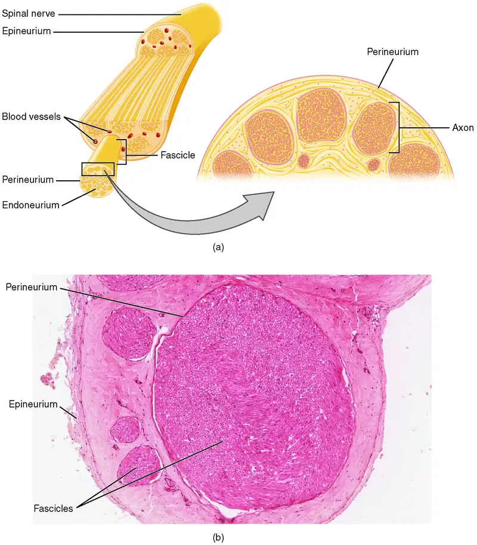
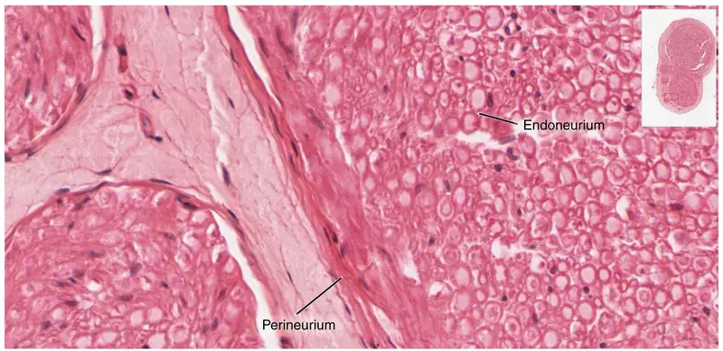
Interactive
View the University of Michigan WebScope to explore the tissue sample in greater detail. With what structures in a skeletal muscle are the endoneurium, perineurium, and epineurium comparable?
Cranial Nerves¶
The nerves attached to the brain are the cranial nerves, which are primarily responsible for the sensory and motor functions of the head and neck (one of these nerves targets organs in the thoracic and abdominal cavities as part of the parasympathetic nervous system). There are twelve cranial nerves, which are designated CNI through CNXII for “Cranial Nerve,” using Roman numerals for 1 through 12. They can be classified as sensory nerves, motor nerves, or a combination of both, meaning that the axons in these nerves originate out of sensory ganglia external to the cranium or motor nuclei within the brain stem. Sensory axons enter the brain to synapse in a nucleus. Motor axons connect to skeletal muscles of the head or neck. Three of the nerves are solely composed of sensory fibers; five are strictly motor; and the remaining four are mixed nerves.
Learning the cranial nerves is a tradition in anatomy courses, and students have always used mnemonic devices to remember the nerve names. A traditional mnemonic is the rhyming couplet, “On Old Olympus’ Towering Tops/A Finn And German Viewed Some Hops,” in which the initial letter of each word corresponds to the initial letter in the name of each nerve. The names of the nerves have changed over the years to reflect current usage and more accurate naming. An exercise to help learn this sort of information is to generate a mnemonic using words that have personal significance. The names of the cranial nerves are listed in Table 13.3 along with a brief description of their function, their source (sensory ganglion or motor nucleus), and their target (sensory nucleus or skeletal muscle). They are listed here with a brief explanation of each nerve (Figure 13.23).
The olfactory nerve and optic nerve are responsible for the sense of smell and vision, respectively. The oculomotor nerve is responsible for eye movements by controlling four of the extraocular muscles. It is also responsible for lifting the upper eyelid when the eyes point up, and for pupillary constriction. The trochlear nerve and the abducens nerve are both responsible for eye movement, but do so by controlling different extraocular muscles. The trigeminal nerve is responsible for cutaneous sensations of the face and controlling the muscles of mastication. The facial nerve is responsible for the muscles involved in facial expressions, as well as part of the sense of taste and the production of saliva. The vestibulocochlear nerve is responsible for the senses of hearing and balance. The glossopharyngeal nerve is responsible for controlling muscles in the oral cavity and upper throat, as well as part of the sense of taste and the production of saliva. The vagus nerve is responsible for contributing to homeostatic control of the organs of the thoracic and upper abdominal cavities. The spinal accessory nerve is responsible for controlling the muscles of the neck, along with cervical spinal nerves. The hypoglossal nerve is responsible for controlling the muscles of the lower throat and tongue.
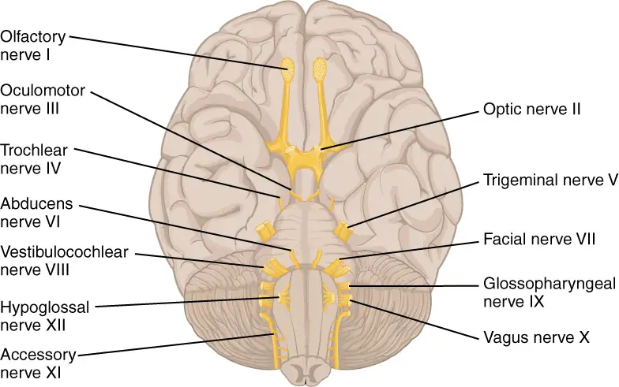
Three of the cranial nerves also contain autonomic fibers, and a fourth is almost purely a component of the autonomic system. The oculomotor, facial, and glossopharyngeal nerves contain fibers that contact autonomic ganglia. The oculomotor fibers initiate pupillary constriction, whereas the facial and glossopharyngeal fibers both initiate salivation. The vagus nerve primarily targets autonomic ganglia in the thoracic and upper abdominal cavities.
Interactive
Visit this site to read about a man who wakes with a headache and a loss of vision. His regular doctor sent him to an ophthalmologist to address the vision loss. The ophthalmologist recognizes a greater problem and immediately sends him to the emergency room. Once there, the patient undergoes a large battery of tests, but a definite cause cannot be found. A specialist recognizes the problem as meningitis, but the question is what caused it originally. How can that be cured? The loss of vision comes from swelling around the optic nerve, which probably presented as a bulge on the inside of the eye. Why is swelling related to meningitis going to push on the optic nerve?
Another important aspect of the cranial nerves that lends itself to a mnemonic is the functional role each nerve plays. The nerves fall into one of three basic groups. They are sensory, motor, or both (see Table 13.3). The sentence, “Some Say Marry Money But My Brother Says Brains Beauty Matter More,” corresponds to the basic function of each nerve. The first, second, and eighth nerves are purely sensory: the olfactory (CNI), optic (CNII), and vestibulocochlear (CNVIII) nerves. The three eye-movement nerves are all motor: the oculomotor (CNIII), trochlear (CNIV), and abducens (CNVI). The spinal accessory (CNXI) and hypoglossal (CNXII) nerves are also strictly motor. The remainder of the nerves contain both sensory and motor fibers. They are the trigeminal (CNV), facial (CNVII), glossopharyngeal (CNIX), and vagus (CNX) nerves. The nerves that convey both are often related to each other. The trigeminal and facial nerves both concern the face; one concerns the sensations and the other concerns the muscle movements. The facial and glossopharyngeal nerves are both responsible for conveying gustatory, or taste, sensations as well as controlling salivary glands. The vagus nerve is involved in visceral responses to taste, namely the gag reflex. This is not an exhaustive list of what these combination nerves do, but there is a thread of relation between them.
Table 13.3
| Cranial Nerves | |||||
|---|---|---|---|---|---|
| Mnemonic | # | Name | Function (S/M/B) | Central connection (nuclei) | Peripheral connection (ganglion or muscle) |
| On | I | Olfactory | Smell (S) | Olfactory bulb | Olfactory epithelium |
| Old | II | Optic | Vision (S) | Hypothalamus/thalamus/midbrain | Retina (retinal ganglion cells) |
| Olympus’ | III | Oculomotor | Eye movements (M) | Oculomotor nucleus | Extraocular muscles (other 4), levator palpebrae superioris, ciliary ganglion (autonomic) |
| Towering | IV | Trochlear | Eye movements (M) | Trochlear nucleus | Superior oblique muscle |
| Tops | V | Trigeminal | Sensory/motor – face (B) | Trigeminal nuclei in the midbrain, pons, and medulla | Trigeminal |
| A | VI | Abducens | Eye movements (M) | Abducens nucleus | Lateral rectus muscle |
| Finn | VII | Facial | Motor – face, Taste (B) | Facial nucleus, solitary nucleus, superior salivatory nucleus | Facial muscles, Geniculate ganglion, Pterygopalatine ganglion (autonomic) |
| And | VIII | Auditory (Vestibulocochlear) | Hearing/balance (S) | Cochlear nucleus, Vestibular nucleus/cerebellum | Spiral ganglion (hearing), Vestibular ganglion (balance) |
| German | IX | Glossopharyngeal | Motor – throat Taste (B) | Solitary nucleus, inferior salivatory nucleus, nucleus ambiguus | Pharyngeal muscles, Geniculate ganglion, Otic ganglion (autonomic) |
| Viewed | X | Vagus | Motor/sensory – viscera (autonomic) (B) | Medulla | Terminal ganglia serving thoracic and upper abdominal organs (heart and small intestines) |
| Some | XI | Spinal Accessory | Motor – head and neck (M) | Spinal accessory nucleus | Neck muscles |
| Hops | XII | Hypoglossal | Motor – lower throat (M) | Hypoglossal nucleus | Muscles of the larynx and lower pharynx |
Spinal Nerves¶
The nerves connected to the spinal cord are the spinal nerves. The arrangement of these nerves is much more regular than that of the cranial nerves. All of the spinal nerves are combined sensory and motor axons that separate into two nerve roots. The sensory axons enter the spinal cord as the dorsal nerve root. The motor fibers, both somatic and autonomic, emerge as the ventral nerve root. The dorsal root ganglion for each nerve is an enlargement of the spinal nerve.
There are 31 spinal nerves, named for the level of the spinal cord at which each one emerges. There are eight pairs of cervical nerves designated C1 to C8, twelve thoracic nerves designated T1 to T12, five pairs of lumbar nerves designated L1 to L5, five pairs of sacral nerves designated S1 to S5, and one pair of coccygeal nerves. The nerves are numbered from the superior to inferior positions, and each emerges from the vertebral column through the intervertebral foramen at its level. The first nerve, C1, emerges between the first cervical vertebra and the occipital bone. The second nerve, C2, emerges between the first and second cervical vertebrae. The same occurs for C3 to C7, but C8 emerges between the seventh cervical vertebra and the first thoracic vertebra. For the thoracic and lumbar nerves, each one emerges between the vertebra that has the same designation and the next vertebra in the column. The sacral nerves emerge from the sacral foramina along the length of that unique vertebra.
Spinal nerves extend outward from the vertebral column to innervate the periphery. The nerves in the periphery are not straight continuations of the spinal nerves, but rather the reorganization of the axons in those nerves to follow different courses. Axons from different spinal nerves will come together into a systemic nerve. This occurs at four places along the length of the vertebral column, each identified as a nerve plexus, whereas the other spinal nerves directly correspond to nerves at their respective levels. In this instance, the word plexus is used to describe networks of nerve fibers with no associated cell bodies.
Of the four nerve plexuses, two are found at the cervical level, one at the lumbar level, and one at the sacral level (Figure 13.24). The cervical plexus is composed of axons from spinal nerves C1 through C5 and branches into nerves in the posterior neck and head, as well as the phrenic nerve, which connects to the diaphragm at the base of the thoracic cavity. The other plexus from the cervical level is the brachial plexus. Spinal nerves C4 through T1 reorganize through this plexus to give rise to the nerves of the arms, as the name brachial suggests. A large nerve from this plexus is the radial nerve from which the axillary nerve branches to go to the armpit region. The radial nerve continues through the arm and is paralleled by the ulnar nerve and the median nerve. The lumbar plexus arises from all the lumbar spinal nerves and gives rise to nerves innervating the pelvic region and the anterior leg. The femoral nerve is one of the major nerves from this plexus, which gives rise to the saphenous nerve as a branch that extends through the anterior lower leg. The sacral plexus comes from the lower lumbar nerves L4 and L5 and the sacral nerves S1 to S4. The most significant systemic nerve to come from this plexus is the sciatic nerve, which is a combination of the tibial nerve and the fibular nerve. The sciatic nerve extends across the hip joint and is most commonly associated with the condition sciatica, which is the result of compression or irritation of the nerve or any of the spinal nerves giving rise to it.
These plexuses are described as arising from spinal nerves and giving rise to certain systemic nerves, but they contain fibers that serve sensory functions or fibers that serve motor functions. This means that some fibers extend from cutaneous or other peripheral sensory surfaces and send action potentials into the CNS. Those are axons of sensory neurons in the dorsal root ganglia that enter the spinal cord through the dorsal nerve root. Other fibers are the axons of motor neurons of the anterior horn of the spinal cord, which emerge in the ventral nerve root and send action potentials to cause skeletal muscles to contract in their target regions. For example, the radial nerve contains fibers of cutaneous sensation in the arm, as well as motor fibers that move muscles in the arm.
Spinal nerves of the thoracic region, T2 through T11, are not part of the plexuses but rather emerge and give rise to the intercostal nerves found between the ribs, which articulate with the vertebrae surrounding the spinal nerve.
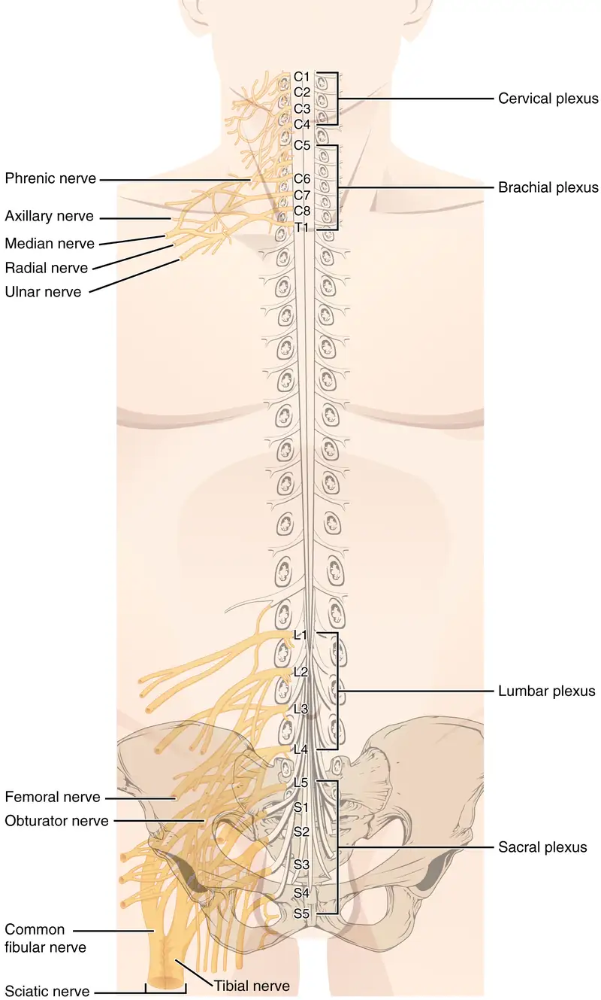
Aging and the Nervous System
Anosmia is the loss of the sense of smell. It is often the result of the olfactory nerve being severed, usually because of blunt force trauma to the head. The sensory neurons of the olfactory epithelium have a limited lifespan of approximately one to four months, and new ones are made on a regular basis. The new neurons extend their axons into the CNS by growing along the existing fibers of the olfactory nerve. The ability of these neurons to be replaced is lost with age. Age-related anosmia is not the result of impact trauma to the head, but rather a slow loss of the sensory neurons with no new neurons born to replace them.
Smell is an important sense, especially for the enjoyment of food. There are only five tastes sensed by the tongue, and two of them are generally thought of as unpleasant tastes (sour and bitter). The rich sensory experience of food is the result of odor molecules associated with the food, both as food is moved into the mouth, and therefore passes under the nose, and when it is chewed and molecules are released to move up the pharynx into the posterior nasal cavity. Anosmia results in a loss of the enjoyment of food.
As the replacement of olfactory neurons declines with age, anosmia can set in. Without the sense of smell, many sufferers complain of food tasting bland. Often, the only way to enjoy food is to add seasoning that can be sensed on the tongue, which usually means adding table salt. The problem with this solution, however, is that this increases sodium intake, which can lead to cardiovascular problems through water retention and the associated increase in blood pressure.
Chapter Review¶
Key Terms¶
- abducens nerve
- sixth cranial nerve; responsible for contraction of one of the extraocular muscles
- alar plate
- developmental region of the spinal cord that gives rise to the posterior horn of the gray matter
- amygdala
- nucleus deep in the temporal lobe of the cerebrum that is related to memory and emotional behavior
- anterior column
- white matter between the anterior horns of the spinal cord composed of many different groups of axons of both ascending and descending tracts
- anterior horn
- gray matter of the spinal cord containing multipolar motor neurons, sometimes referred to as the ventral horn
- anterior median fissure
- deep midline feature of the anterior spinal cord, marking the separation between the right and left sides of the cord
- anterior spinal artery
- blood vessel from the merged branches of the vertebral arteries that runs along the anterior surface of the spinal cord
- arachnoid granulation
- outpocket of the arachnoid membrane into the dural sinuses that allows for reabsorption of CSF into the blood
- arachnoid mater
- middle layer of the meninges named for the spider-web–like trabeculae that extend between it and the pia mater
- arachnoid trabeculae
- filaments between the arachnoid and pia mater within the subarachnoid space
- ascending tract
- central nervous system fibers carrying sensory information from the spinal cord or periphery to the brain
- axillary nerve
- systemic nerve of the arm that arises from the brachial plexus
- basal forebrain
- nuclei of the cerebrum related to modulation of sensory stimuli and attention through broad projections to the cerebral cortex, loss of which is related to Alzheimer’s disease
- basal nuclei
- nuclei of the cerebrum (with a few components in the upper brain stem and diencephalon) that are responsible for assessing cortical movement commands and comparing them with the general state of the individual through broad modulatory activity of dopamine neurons; largely related to motor functions, as evidenced through the symptoms of Parkinson’s and Huntington’s diseases
- basal plate
- developmental region of the spinal cord that gives rise to the lateral and anterior horns of gray matter
- basilar artery
- blood vessel from the merged vertebral arteries that runs along the dorsal surface of the brain stem
- brachial plexus
- nerve plexus associated with the lower cervical spinal nerves and first thoracic spinal nerve
- brain stem
- region of the adult brain that includes the midbrain, pons, and medulla oblongata and develops from the mesencephalon, metencephalon, and myelencephalon of the embryonic brain
- Broca’s area
- region of the frontal lobe associated with the motor commands necessary for speech production and located only in the cerebral hemisphere responsible for language production, which is the left side in approximately 95 percent of the population
- Brodmann’s areas
- mapping of regions of the cerebral cortex based on microscopic anatomy that relates specific areas to functional differences, as described by Brodmann in the early 1900s
- carotid canal
- opening in the temporal bone through which the internal carotid artery enters the cranium
- cauda equina
- bundle of spinal nerve roots that descend from the lower spinal cord below the first lumbar vertebra and lie within the vertebral cavity; has the appearance of a horse's tail
- caudate
- nucleus deep in the cerebrum that is part of the basal nuclei; along with the putamen, it is part of the striatum
- central canal
- hollow space within the spinal cord that is the remnant of the center of the neural tube
- central sulcus
- surface landmark of the cerebral cortex that marks the boundary between the frontal and parietal lobes
- cephalic flexure
- curve in midbrain of the embryo that positions the forebrain ventrally
- cerebellum
- region of the adult brain connected primarily to the pons that developed from the metencephalon (along with the pons) and is largely responsible for comparing information from the cerebrum with sensory feedback from the periphery through the spinal cord
- cerebral aqueduct
- connection of the ventricular system between the third and fourth ventricles located in the midbrain
- cerebral cortex
- outer gray matter covering the forebrain, marked by wrinkles and folds known as gyri and sulci
- cerebral hemisphere
- one half of the bilaterally symmetrical cerebrum
- cerebrum
- region of the adult brain that develops from the telencephalon and is responsible for higher neurological functions such as memory, emotion, and consciousness
- cervical plexus
- nerve plexus associated with the upper cervical spinal nerves
- choroid plexus
- specialized structures containing ependymal cells lining blood capillaries that filter blood to produce CSF in the four ventricles of the brain
- circle of Willis
- unique anatomical arrangement of blood vessels around the base of the brain that maintains perfusion of blood into the brain even if one component of the structure is blocked or narrowed
- common carotid artery
- blood vessel that branches off the aorta (or the brachiocephalic artery on the right) and supplies blood to the head and neck
- corpus callosum
- large white matter structure that connects the right and left cerebral hemispheres
- cranial nerve
- one of twelve nerves connected to the brain that are responsible for sensory or motor functions of the head and neck
- cranial nerve ganglion
- sensory ganglion of cranial nerves
- descending tract
- central nervous system fibers carrying motor commands from the brain to the spinal cord or periphery
- diencephalon
- region of the adult brain that retains its name from embryonic development and includes the thalamus and hypothalamus
- direct pathway
- connections within the basal nuclei from the striatum to the globus pallidus internal segment and substantia nigra pars reticulata that disinhibit the thalamus to increase cortical control of movement
- disinhibition
- disynaptic connection in which the first synapse inhibits the second cell, which then stops inhibiting the final target
- dorsal (posterior) nerve root
- axons entering the posterior horn of the spinal cord
- dorsal (posterior) root ganglion
- sensory ganglion attached to the posterior nerve root of a spinal nerve
- dura mater
- tough, fibrous, outer layer of the meninges that is attached to the inner surface of the cranium and vertebral column and surrounds the entire CNS
- dural sinus
- any of the venous structures surrounding the brain, enclosed within the dura mater, which drain blood from the CNS to the common venous return of the jugular veins
- endoneurium
- innermost layer of connective tissue that surrounds individual axons within a nerve
- enteric nervous system
- peripheral structures, namely ganglia and nerves, that are incorporated into the digestive system organs
- enteric plexus
- neuronal plexus in the wall of the intestines, which is part of the enteric nervous system
- epineurium
- outermost layer of connective tissue that surrounds an entire nerve
- epithalamus
- region of the diecephalon containing the pineal gland
- esophageal plexus
- neuronal plexus in the wall of the esophagus that is part of the enteric nervous system
- extraocular muscles
- six skeletal muscles that control eye movement within the orbit
- facial nerve
- seventh cranial nerve; responsible for contraction of the facial muscles and for part of the sense of taste, as well as causing saliva production
- fascicle
- small bundles of nerve or muscle fibers enclosed by connective tissue
- femoral nerve
- systemic nerve of the anterior leg that arises from the lumbar plexus
- fibular nerve
- systemic nerve of the posterior leg that begins as part of the sciatic nerve
- foramen magnum
- large opening in the occipital bone of the skull through which the spinal cord emerges and the vertebral arteries enter the cranium
- forebrain
- anterior region of the adult brain that develops from the prosencephalon and includes the cerebrum and diencephalon
- fourth ventricle
- the portion of the ventricular system that is in the region of the brain stem and opens into the subarachnoid space through the median and lateral apertures
- frontal eye field
- region of the frontal lobe associated with motor commands to orient the eyes toward an object of visual attention
- frontal lobe
- region of the cerebral cortex directly beneath the frontal bone of the cranium
- gastric plexuses
- neuronal networks in the wall of the stomach that are part of the enteric nervous system
- globus pallidus
- nuclei deep in the cerebrum that are part of the basal nuclei and can be divided into the internal and external segments
- glossopharyngeal nerve
- ninth cranial nerve; responsible for contraction of muscles in the tongue and throat and for part of the sense of taste, as well as causing saliva production
- gyrus
- ridge formed by convolutions on the surface of the cerebrum or cerebellum
- hindbrain
- posterior region of the adult brain that develops from the rhombencephalon and includes the pons, medulla oblongata, and cerebellum
- hippocampus
- gray matter deep in the temporal lobe that is very important for long-term memory formation
- hypoglossal nerve
- twelfth cranial nerve; responsible for contraction of muscles of the tongue
- hypothalamus
- major region of the diencephalon that is responsible for coordinating autonomic and endocrine control of homeostasis
- indirect pathway
- connections within the basal nuclei from the striatum through the globus pallidus external segment and subthalamic nucleus to the globus pallidus internal segment/substantia nigra pars compacta that result in inhibition of the thalamus to decrease cortical control of movement
- inferior colliculus
- half of the midbrain tectum that is part of the brain stem auditory pathway
- inferior olive
- nucleus in the medulla that is involved in processing information related to motor control
- intercostal nerve
- systemic nerve in the thoracic cavity that is found between two ribs
- internal carotid artery
- branch from the common carotid artery that enters the cranium and supplies blood to the brain
- interventricular foramina
- openings between the lateral ventricles and third ventricle allowing for the passage of CSF
- jugular veins
- blood vessels that return “used” blood from the head and neck
- kinesthesia
- general sensory perception of movement of the body
- lateral apertures
- pair of openings from the fourth ventricle to the subarachnoid space on either side and between the medulla and cerebellum
- lateral column
- white matter of the spinal cord between the posterior horn on one side and the axons from the anterior horn on the same side; composed of many different groups of axons, of both ascending and descending tracts, carrying motor commands to and from the brain
- lateral horn
- region of the spinal cord gray matter in the thoracic, upper lumbar, and sacral regions that is the central component of the sympathetic division of the autonomic nervous system
- lateral sulcus
- surface landmark of the cerebral cortex that marks the boundary between the temporal lobe and the frontal and parietal lobes
- lateral ventricles
- portions of the ventricular system that are in the region of the cerebrum
- limbic cortex
- collection of structures of the cerebral cortex that are involved in emotion, memory, and behavior and are part of the larger limbic system
- limbic system
- structures at the edge (limit) of the boundary between the forebrain and hindbrain that are most associated with emotional behavior and memory formation
- longitudinal fissure
- large separation along the midline between the two cerebral hemispheres
- lumbar plexus
- nerve plexus associated with the lumbar spinal nerves
- lumbar puncture
- procedure used to withdraw CSF from the lower lumbar region of the vertebral column that avoids the risk of damaging CNS tissue because the spinal cord ends at the upper lumbar vertebrae
- median aperture
- singular opening from the fourth ventricle into the subarachnoid space at the midline between the medulla and cerebellum
- median nerve
- systemic nerve of the arm, located between the ulnar and radial nerves
- meninges
- protective outer coverings of the CNS composed of connective tissue
- mesencephalon
- primary vesicle of the embryonic brain that does not significantly change through the rest of embryonic development and becomes the midbrain
- metencephalon
- secondary vesicle of the embryonic brain that develops into the pons and the cerebellum
- midbrain
- middle region of the adult brain that develops from the mesencephalon
- myelencephalon
- secondary vesicle of the embryonic brain that develops into the medulla
- nerve plexus
- network of nerves without neuronal cell bodies included
- neural crest
- tissue that detaches from the edges of the neural groove and migrates through the embryo to develop into peripheral structures of both nervous and non-nervous tissues
- neural fold
- elevated edge of the neural groove
- neural groove
- region of the neural plate that folds into the dorsal surface of the embryo and closes off to become the neural tube
- neural plate
- thickened layer of neuroepithelium that runs longitudinally along the dorsal surface of an embryo and gives rise to nervous system tissue
- neural tube
- precursor to structures of the central nervous system, formed by the invagination and separation of neuroepithelium
- neuraxis
- central axis to the nervous system, from the posterior to anterior ends of the neural tube; the inferior tip of the spinal cord to the anterior surface of the cerebrum
- occipital lobe
- region of the cerebral cortex directly beneath the occipital bone of the cranium
- occipital sinuses
- dural sinuses along the edge of the occipital lobes of the cerebrum
- oculomotor nerve
- third cranial nerve; responsible for contraction of four of the extraocular muscles, the muscle in the upper eyelid, and pupillary constriction
- olfaction
- special sense responsible for smell, which has a unique, direct connection to the cerebrum
- olfactory nerve
- first cranial nerve; responsible for the sense of smell
- optic nerve
- second cranial nerve; responsible for visual sensation
- orthostatic reflex
- sympathetic function that maintains blood pressure when standing to offset the increased effect of gravity
- paravertebral ganglia
- autonomic ganglia superior to the sympathetic chain ganglia
- parietal lobe
- region of the cerebral cortex directly beneath the parietal bone of the cranium
- parieto-occipital sulcus
- groove in the cerebral cortex representing the border between the parietal and occipital cortices
- perineurium
- layer of connective tissue surrounding fascicles within a nerve
- phrenic nerve
- systemic nerve from the cervical plexus that innervates the diaphragm
- pia mater
- thin, innermost membrane of the meninges that directly covers the surface of the CNS
- plexus
- network of nerves or nervous tissue
- postcentral gyrus
- ridge just posterior to the central sulcus, in the parietal lobe, where somatosensory processing initially takes place in the cerebrum
- posterior columns
- white matter of the spinal cord that lies between the posterior horns of the gray matter, sometimes referred to as the dorsal column; composed of axons of ascending tracts that carry sensory information up to the brain
- posterior horn
- gray matter region of the spinal cord in which sensory input arrives, sometimes referred to as the dorsal horn
- posterior median sulcus
- midline feature of the posterior spinal cord, marking the separation between right and left sides of the cord
- posterolateral sulcus
- feature of the posterior spinal cord marking the entry of posterior nerve roots and the separation between the posterior and lateral columns of the white matter
- precentral gyrus
- ridge just anterior to the central sulcus, in the frontal lobe, the primary motor cortex is located
- prefrontal lobe
- specific region of the frontal lobe anterior to the more specific motor function areas, which can be related to the early planning of movements and intentions to the point of being personality-type functions
- premotor area
- region of the frontal lobe responsible for planning movements that will be executed through the primary motor cortex
- prevertebral ganglia
- autonomic ganglia that are anterior to the vertebral column and functionally related to the sympathetic chain ganglia
- primary vesicle
- initial enlargements of the anterior neural tube during embryonic development that develop into the forebrain, midbrain, and hindbrain
- proprioception
- general sensory perceptions providing information about location and movement of body parts; the “sense of the self”
- prosencephalon
- primary vesicle of the embryonic brain that develops into the forebrain, which includes the cerebrum and diencephalon
- putamen
- nucleus deep in the cerebrum that is part of the basal nuclei; along with the caudate, it is part of the striatum
- radial nerve
- systemic nerve of the arm, the distal component of which is located near the radial bone
- reticular formation
- diffuse region of gray matter throughout the brain stem that regulates sleep, wakefulness, and states of consciousness
- rhombencephalon
- primary vesicle of the embryonic brain that develops into the hindbrain, which includes the pons, cerebellum, and medulla
- sacral plexus
- nerve plexus associated with the lower lumbar and sacral spinal nerves
- saphenous nerve
- systemic nerve of the lower anterior leg that is a branch from the femoral nerve
- sciatic nerve
- systemic nerve from the sacral plexus that is a combination of the tibial and fibular nerves and extends across the hip joint and gluteal region into the upper posterior leg
- sciatica
- painful condition resulting from inflammation or compression of the sciatic nerve or any of the spinal nerves that contribute to it
- secondary vesicle
- five vesicles that develop from primary vesicles, continuing the process of differentiation of the embryonic brain
- sigmoid sinuses
- dural sinuses that drain directly into the jugular veins
- somatosensation
- general senses related to the body, usually thought of as the senses of touch, which would include pain, temperature, and proprioception
- spinal accessory nerve
- eleventh cranial nerve; responsible for contraction of neck muscles
- spinal nerve
- one of 31 nerves connected to the spinal cord
- straight sinus
- dural sinus that drains blood from the deep center of the brain to collect with the other sinuses
- striatum
- the caudate and putamen collectively, as part of the basal nuclei, which receive input from the cerebral cortex
- subarachnoid space
- space between the arachnoid mater and pia mater that contains CSF and the fibrous connections of the arachnoid trabeculae
- subcortical nucleus
- all the nuclei beneath the cerebral cortex, including the basal nuclei and the basal forebrain
- substantia nigra pars compacta
- nuclei within the basal nuclei that release dopamine to modulate the function of the striatum; part of the motor pathway
- substantia nigra pars reticulata
- nuclei within the basal nuclei that serve as an output center of the nuclei; part of the motor pathway
- subthalamus
- nucleus within the basal nuclei that is part of the indirect pathway
- sulcus
- groove formed by convolutions in the surface of the cerebral cortex
- superior colliculus
- half of the midbrain tectum that is responsible for aligning visual, auditory, and somatosensory spatial perceptions
- superior sagittal sinus
- dural sinus that runs along the top of the longitudinal fissure and drains blood from the majority of the outer cerebrum
- sympathetic chain ganglia
- autonomic ganglia in a chain along the anterolateral aspect of the vertebral column that are responsible for contributing to homeostatic mechanisms of the autonomic nervous system
- systemic nerve
- nerve in the periphery distal to a nerve plexus or spinal nerve
- tectum
- region of the midbrain, thought of as the roof of the cerebral aqueduct, which is subdivided into the inferior and superior colliculi
- tegmentum
- region of the midbrain, thought of as the floor of the cerebral aqueduct, which continues into the pons and medulla as the floor of the fourth ventricle
- telencephalon
- secondary vesicle of the embryonic brain that develops into the cerebrum
- temporal lobe
- region of the cerebral cortex directly beneath the temporal bone of the cranium
- terminal ganglion
- autonomic ganglia that are near or within the walls of organs that are responsible for contributing to homeostatic mechanisms of the autonomic nervous system
- thalamus
- major region of the diencephalon that is responsible for relaying information between the cerebrum and the hindbrain, spinal cord, and periphery
- third ventricle
- portion of the ventricular system that is in the region of the diencephalon
- tibial nerve
- systemic nerve of the posterior leg that begins as part of the sciatic nerve
- transverse sinuses
- dural sinuses that drain along either side of the occipital–cerebellar space
- trigeminal ganglion
- sensory ganglion that contributes sensory fibers to the trigeminal nerve
- trigeminal nerve
- fifth cranial nerve; responsible for cutaneous sensation of the face and contraction of the muscles of mastication
- trochlear nerve
- fourth cranial nerve; responsible for contraction of one of the extraocular muscles
- ulnar nerve
- systemic nerve of the arm located close to the ulna, a bone of the forearm
- vagus nerve
- tenth cranial nerve; responsible for the autonomic control of organs in the thoracic and upper abdominal cavities
- ventral (anterior) nerve root
- axons emerging from the anterior or lateral horns of the spinal cord
- ventricles
- remnants of the hollow center of the neural tube that are spaces for cerebrospinal fluid to circulate through the brain
- vertebral arteries
- arteries that ascend along either side of the vertebral column through the transverse foramina of the cervical vertebrae and enter the cranium through the foramen magnum
- vestibulocochlear nerve
- eighth cranial nerve; responsible for the sensations of hearing and balance
Chapter Review¶
13.1 The Embryologic Perspective¶
The development of the nervous system starts early in embryonic development. The outer layer of the embryo, the ectoderm, gives rise to the skin and the nervous system. A specialized region of this layer, the neuroectoderm, becomes a groove that folds in and becomes the neural tube beneath the dorsal surface of the embryo. The anterior end of the neural tube develops into the brain, and the posterior region becomes the spinal cord. Tissues at the edges of the neural groove, when it closes off, are called the neural crest and migrate through the embryo to give rise to PNS structures as well as some non-nervous tissues.
The brain develops from this early tube structure and gives rise to specific regions of the adult brain. As the neural tube grows and differentiates, it enlarges into three vesicles that correspond to the forebrain, midbrain, and hindbrain regions of the adult brain. Later in development, two of these three vesicles differentiate further, resulting in five vesicles. Those five vesicles can be aligned with the four major regions of the adult brain. The cerebrum is formed directly from the telencephalon. The diencephalon is the only region that keeps its embryonic name. The mesencephalon, metencephalon, and myelencephalon become the brain stem. The cerebellum also develops from the metencephalon and is a separate region of the adult brain.
The spinal cord develops out of the rest of the neural tube and retains the tube structure, with the nervous tissue thickening and the hollow center becoming a very small central canal through the cord. The rest of the hollow center of the neural tube corresponds to open spaces within the brain called the ventricles, where cerebrospinal fluid is found.
13.2 The Central Nervous System¶
The adult brain is separated into four major regions: the cerebrum, the diencephalon, the brain stem, and the cerebellum. The cerebrum is the largest portion and contains the cerebral cortex and subcortical nuclei. It is divided into two halves by the longitudinal fissure.
The cortex is separated into the frontal, parietal, temporal, and occipital lobes. The frontal lobe is responsible for motor functions, from planning movements through executing commands to be sent to the spinal cord and periphery. The most anterior portion of the frontal lobe is the prefrontal cortex, which is associated with aspects of personality through its influence on motor responses in decision-making.
The other lobes are responsible for sensory functions. The parietal lobe is where somatosensation is processed. The occipital lobe is where visual processing begins, although the other parts of the brain can contribute to visual function. The temporal lobe contains the cortical area for auditory processing, but also has regions crucial for memory formation.
Nuclei beneath the cerebral cortex, known as the subcortical nuclei, are responsible for augmenting cortical functions. The basal nuclei receive input from cortical areas and compare it with the general state of the individual through the activity of a dopamine-releasing nucleus. The output influences the activity of part of the thalamus that can then increase or decrease cortical activity that often results in changes to motor commands. The basal forebrain is responsible for modulating cortical activity in attention and memory. The limbic system includes deep cerebral nuclei that are responsible for emotion and memory.
The diencephalon includes the thalamus and the hypothalamus, along with some other structures. The thalamus is a relay between the cerebrum and the rest of the nervous system. The hypothalamus coordinates homeostatic functions through the autonomic and endocrine systems.
The brain stem is composed of the midbrain, pons, and medulla. It controls the head and neck region of the body through the cranial nerves. There are control centers in the brain stem that regulate the cardiovascular and respiratory systems.
The cerebellum is connected to the brain stem, primarily at the pons, where it receives a copy of the descending input from the cerebrum to the spinal cord. It can compare this with sensory feedback input through the medulla and send output through the midbrain that can correct motor commands for coordination.
13.3 Circulation and the Central Nervous System¶
The CNS has a privileged blood supply established by the blood-brain barrier. Establishing this barrier are anatomical structures that help to protect and isolate the CNS. The arterial blood to the brain comes from the internal carotid and vertebral arteries, which both contribute to the unique circle of Willis that provides constant perfusion of the brain even if one of the blood vessels is blocked or narrowed. That blood is eventually filtered to make a separate medium, the CSF, that circulates within the spaces of the brain and then into the surrounding space defined by the meninges, the protective covering of the brain and spinal cord.
The blood that nourishes the brain and spinal cord is behind the glial-cell–enforced blood-brain barrier, which limits the exchange of material from blood vessels with the interstitial fluid of the nervous tissue. Thus, metabolic wastes are collected in cerebrospinal fluid that circulates through the CNS. This fluid is produced by filtering blood at the choroid plexuses in the four ventricles of the brain. It then circulates through the ventricles and into the subarachnoid space, between the pia mater and the arachnoid mater. From the arachnoid granulations, CSF is reabsorbed into the blood, removing the waste from the privileged central nervous tissue.
The blood, now with the reabsorbed CSF, drains out of the cranium through the dural sinuses. The dura mater is the tough outer covering of the CNS, which is anchored to the inner surface of the cranial and vertebral cavities. It surrounds the venous space known as the dural sinuses, which connect to the jugular veins, where blood drains from the head and neck.
13.4 The Peripheral Nervous System¶
The PNS is composed of the groups of neurons (ganglia) and bundles of axons (nerves) that are outside of the brain and spinal cord. Ganglia are of two types, sensory or autonomic. Sensory ganglia contain unipolar sensory neurons and are found on the dorsal root of all spinal nerves as well as associated with many of the cranial nerves. Autonomic ganglia are in the sympathetic chain, the associated paravertebral or prevertebral ganglia, or in terminal ganglia near or within the organs controlled by the autonomic nervous system.
Nerves are classified as cranial nerves or spinal nerves on the basis of their connection to the brain or spinal cord, respectively. The twelve cranial nerves can be strictly sensory in function, strictly motor in function, or a combination of the two functions. Sensory fibers are axons of sensory ganglia that carry sensory information into the brain and target sensory nuclei. Motor fibers are axons of motor neurons in motor nuclei of the brain stem and target skeletal muscles of the head and neck. Spinal nerves are all mixed nerves with both sensory and motor fibers. Spinal nerves emerge from the spinal cord and reorganize through plexuses, which then give rise to systemic nerves. Thoracic spinal nerves are not part of any plexus, but give rise to the intercostal nerves directly.
Interactive Link Questions¶
13.1 The Embryologic Perspective¶
1. Watch this animation to examine the development of the brain, starting with the neural tube. As the anterior end of the neural tube develops, it enlarges into the primary vesicles that establish the forebrain, midbrain, and hindbrain. Those structures continue to develop throughout the rest of embryonic development and into adolescence. They are the basis of the structure of the fully developed adult brain. How would you describe the difference in the relative sizes of the three regions of the brain when comparing the early (25th embryonic day) brain and the adult brain?
Answer
The three regions (forebrain, midbrain, and hindbrain) appear to be approximately equal in size when they are first established, but the midbrain in the adult is much smaller than the others—suggesting that it does not increase in size nearly as much as the forebrain or hindbrain.
2. Watch this video to learn more about overall brain development in children, including the role of white matter and its contribution to cognitive function. The video focuses on forming connections in the brain, especially from birth to 30 years of age and it shows several MRI studies.
Answer
This is really a matter of opinion, but there are ethical issues to consider when a teenager’s behavior results in legal trouble.
13.2 The Central Nervous System¶
3. Watch this video to learn about the basal nuclei (also known as the basal ganglia), which have two pathways that process information within the cerebrum. As shown in this video, the direct pathway is the shorter pathway through the system that results in increased activity in the cerebral cortex and increased motor activity. The direct pathway is described as resulting in “disinhibition” of the thalamus. What does disinhibition mean? What are the two neurons doing individually to cause this?
Answer
Both cells are inhibitory. The first cell inhibits the second one. Therefore, the second cell can no longer inhibit its target. This is disinhibition of that target across two synapses.
4. Watch this video to learn about the basal nuclei (also known as the basal ganglia), which have two pathways that process information within the cerebrum. As shown in this video, the indirect pathway is the longer pathway through the system that results in decreased activity in the cerebral cortex, and therefore less motor activity. The indirect pathway has an extra couple of connections in it, including disinhibition of the subthalamic nucleus. What is the end result on the thalamus, and therefore on movement initiated by the cerebral cortex?
Answer
By disinhibiting the subthalamic nucleus, the indirect pathway increases excitation of the globus pallidus internal segment. That, in turn, inhibits the thalamus, which is the opposite effect of the direct pathway that disinhibits the thalamus.
5. Watch this video to learn about the gray matter of the spinal cord that receives input from fibers of the dorsal (posterior) root and sends information out through the fibers of the ventral (anterior) root. As discussed in this video, these connections represent the interactions of the CNS with peripheral structures for both sensory and motor functions. The cervical and lumbar spinal cords have enlargements as a result of larger populations of neurons. What are these enlargements responsible for?
Answer
There are more motor neurons in the anterior horns that are responsible for movement in the limbs. The cervical enlargement is for the arms, and the lumbar enlargement is for the legs.
6. Compared with the nearest evolutionary relative, the chimpanzee, the human has a brain that is huge. At a point in the past, a common ancestor gave rise to the two species of humans and chimpanzees. That evolutionary history is long and is still an area of intense study. But something happened to increase the size of the human brain relative to the chimpanzee. Read this article in which the author explores the current understanding of why this happened.
According to one hypothesis about the expansion of brain size, what tissue might have been sacrificed so energy was available to grow our larger brain? Based on what you know about that tissue and nervous tissue, why would there be a trade-off between them in terms of energy use?
Answer
Energy is needed for the brain to develop and perform higher cognitive functions. That energy is not available for the muscle tissues to develop and function. The hypothesis suggests that humans have larger brains and less muscle mass, and chimpanzees have the smaller brains but more muscle mass.
13.3 Circulation and the Central Nervous System¶
7. Watch this animation to see how blood flows to the brain and passes through the circle of Willis before being distributed through the cerebrum. The circle of Willis is a specialized arrangement of arteries that ensure constant perfusion of the cerebrum even in the event of a blockage of one of the arteries in the circle. The animation shows the normal direction of flow through the circle of Willis to the middle cerebral artery. Where would the blood come from if there were a blockage just posterior to the middle cerebral artery on the left?
Answer
If blood could not get to the middle cerebral artery through the posterior circulation, the blood would flow around the circle of Willis to reach that artery from an anterior vessel. Blood flow would just reverse within the circle.
8. Watch this video that describes the procedure known as the lumbar puncture, a medical procedure used to sample the CSF. Because of the anatomy of the CNS, it is a relative safe location to insert a needle. Why is the lumbar puncture performed in the lower lumbar area of the vertebral column?
Answer
The spinal cord ends in the upper lumbar area of the vertebral column, so a needle inserted lower than that will not damage the nervous tissue of the CNS.
9. Watch this animation that shows the flow of CSF through the brain and spinal cord, and how it originates from the ventricles and then spreads into the space within the meninges, where the fluids then move into the venous sinuses to return to the cardiovascular circulation. What are the structures that produce CSF and where are they found? How are the structures indicated in this animation?
Answer
The choroid plexuses of the ventricles make CSF. As shown, there is a little of the blue color appearing in each ventricle that is joined by the color flowing from the other ventricles.
13.4 The Peripheral Nervous System¶
10. Figure 13.20 If you zoom in on the DRG, you can see smaller satellite glial cells surrounding the large cell bodies of the sensory neurons. From what structure do satellite cells derive during embryologic development?
Answer
Figure 13.20 They derive from the neural crest.
11. Figure 13.22 To what structures in a skeletal muscle are the endoneurium, perineurium, and epineurium comparable?
Answer
Figure 13.22 The endoneurium surrounding individual nerve fibers is comparable to the endomysium surrounding myofibrils, the perineurium bundling axons into fascicles is comparable to the perimysium bundling muscle fibers into fascicles, and the epineurium surrounding the whole nerve is comparable to the epimysium surrounding the muscle.
12. Visit this site to read about a man who wakes with a headache and a loss of vision. His regular doctor sent him to an ophthalmologist to address the vision loss. The ophthalmologist recognizes a greater problem and immediately sends him to the emergency room. Once there, the patient undergoes a large battery of tests, but a definite cause cannot be found. A specialist recognizes the problem as meningitis, but the question is what caused it originally. How can that be cured? The loss of vision comes from swelling around the optic nerve, which probably presented as a bulge on the inside of the eye. Why is swelling related to meningitis going to push on the optic nerve?
Answer
The optic nerve enters the CNS in its projection from the eyes in the periphery, which means that it crosses through the meninges. Meningitis will include swelling of those protective layers of the CNS, resulting in pressure on the optic nerve, which can compromise vision.
Multiple Choice¶
13.1 The Embryologic Perspective¶
13. Aside from the nervous system, which other organ system develops out of the ectoderm?
- digestive
- respiratory
- integumentary
- urinary
Answer
C
14. Which primary vesicle of the embryonic nervous system does not differentiate into more vesicles at the secondary stage?
- prosencephalon
- mesencephalon
- diencephalon
- rhombencephalon
Answer
B
15. Which adult structure(s) arises from the diencephalon?
- thalamus, hypothalamus, retina
- midbrain, pons, medulla
- pons and cerebellum
- cerebrum
Answer
A
16. Which non-nervous tissue develops from the neuroectoderm?
- respiratory mucosa
- vertebral bone
- digestive lining
- craniofacial bone
Answer
D
17. Which structure is associated with the embryologic development of the peripheral nervous system?
- neural crest
- neuraxis
- rhombencephalon
- neural tube
Answer
A
13.2 The Central Nervous System¶
18. Which lobe of the cerebral cortex is responsible for generating motor commands?
- temporal
- parietal
- occipital
- frontal
Answer
D
19. What region of the diencephalon coordinates homeostasis?
- thalamus
- epithalamus
- hypothalamus
- subthalamus
Answer
C
20. What level of the brain stem is the major input to the cerebellum?
- midbrain
- pons
- medulla
- spinal cord
Answer
B
21. What region of the spinal cord contains motor neurons that direct the movement of skeletal muscles?
- anterior horn
- posterior horn
- lateral horn
- alar plate
Answer
A
22. Brodmann’s areas map different regions of the ________ to particular functions.
- cerebellum
- cerebral cortex
- basal forebrain
- corpus callosum
Answer
B
13.3 Circulation and the Central Nervous System¶
23. What blood vessel enters the cranium to supply the brain with fresh, oxygenated blood?
- common carotid artery
- jugular vein
- internal carotid artery
- aorta
Answer
C
24. Which layer of the meninges surrounds and supports the sinuses that form the route through which blood drains from the CNS?
- dura mater
- arachnoid mater
- subarachnoid
- pia mater
Answer
A
25. What type of glial cell is responsible for filtering blood to produce CSF at the choroid plexus?
- ependymal cell
- astrocyte
- oligodendrocyte
- Schwann cell
Answer
A
26. Which portion of the ventricular system is found within the diencephalon?
- lateral ventricles
- third ventricle
- cerebral aqueduct
- fourth ventricle
Answer
B
27. What condition causes a stroke?
- inflammation of meninges
- lumbar puncture
- infection of cerebral spinal fluid
- disruption of blood to the brain
Answer
D
13.4 The Peripheral Nervous System¶
28. What type of ganglion contains neurons that control homeostatic mechanisms of the body?
- sensory ganglion
- dorsal root ganglion
- autonomic ganglion
- cranial nerve ganglion
Answer
C
29. Which ganglion is responsible for cutaneous sensations of the face?
- otic ganglion
- vestibular ganglion
- geniculate ganglion
- trigeminal ganglion
Answer
D
30. What is the name for a bundle of axons within a nerve?
- fascicle
- tract
- nerve root
- epineurium
Answer
A
31. Which cranial nerve does not control functions in the head and neck?
- olfactory
- trochlear
- glossopharyngeal
- vagus
Answer
D
32. Which of these structures is not under direct control of the peripheral nervous system?
- trigeminal ganglion
- gastric plexus
- sympathetic chain ganglia
- cervical plexus
Answer
B
Critical Thinking Questions¶
13.1 The Embryologic Perspective¶
33. Studying the embryonic development of the nervous system makes it easier to understand the complexity of the adult nervous system. Give one example of how development in the embryonic nervous system explains a more complex structure in the adult nervous system.
Answer
The retina, a PNS structure in the adult, grows from the diencephalon in the embryonic nervous system. The mature connections from the retina through the optic nerve/tract are to the hypothalamus and thalamus of the diencephalon, and to the midbrain, which developed directly adjacent to the diencephalon as the mesencephalon in the embryo.
34. What happens in development that suggests that there is a special relationship between the skeletal structure of the head and the nervous system?
Answer
The neural crest gives rise to PNS structures (such as ganglia) and also to cartilage and bone of the face and cranium.
13.2 The Central Nervous System¶
35. Damage to specific regions of the cerebral cortex, such as through a stroke, can result in specific losses of function. What functions would likely be lost by a stroke in the temporal lobe?
Answer
The temporal lobe has sensory functions associated with hearing and vision, as well as being important for memory. A stroke in the temporal lobe can result in specific sensory deficits in these systems (known as agnosias) or losses in memory.
36. Why do the anatomical inputs to the cerebellum suggest that it can compare motor commands and sensory feedback?
Answer
A copy of descending input from the cerebrum to the spinal cord, through the pons, and sensory feedback from the spinal cord and special senses like balance, through the medulla, both go to the cerebellum. It can therefore send output through the midbrain that will correct spinal cord control of skeletal muscle movements.
13.3 Circulation and the Central Nervous System¶
37. Why can the circle of Willis maintain perfusion of the brain even if there is a blockage in one part of the structure?
Answer
The structure is a circular connection of blood vessels, so that blood coming up from one of the arteries can flow in either direction around the circle and avoid any blockage or narrowing of the blood vessels.
38. Meningitis is an inflammation of the meninges that can have severe effects on neurological function. Why is infection of this structure potentially so dangerous?
Answer
The nerves that connect the periphery to the CNS pass through these layers of tissue and can be damaged by that inflammation, causing a loss of important neurological functions.
13.4 The Peripheral Nervous System¶
39. Why are ganglia and nerves not surrounded by protective structures like the meninges of the CNS?
Answer
The peripheral nervous tissues are out in the body, sometimes part of other organ systems. There is not a privileged blood supply like there is to the brain and spinal cord, so peripheral nervous tissues do not need the same sort of protections.
40. Testing for neurological function involves a series of tests of functions associated with the cranial nerves. What functions, and therefore which nerves, are being tested by asking a patient to follow the tip of a pen with their eyes?
Answer
The contraction of extraocular muscles is being tested, which is the function of the oculomotor, trochlear, and abducens nerves.
Adapted from Anatomy and Physiology 2e by OpenStax, licensed under CC BY 4.0. Access the original for free at openstax.org. Changes: converted to the web reading format of The Open Book Project.